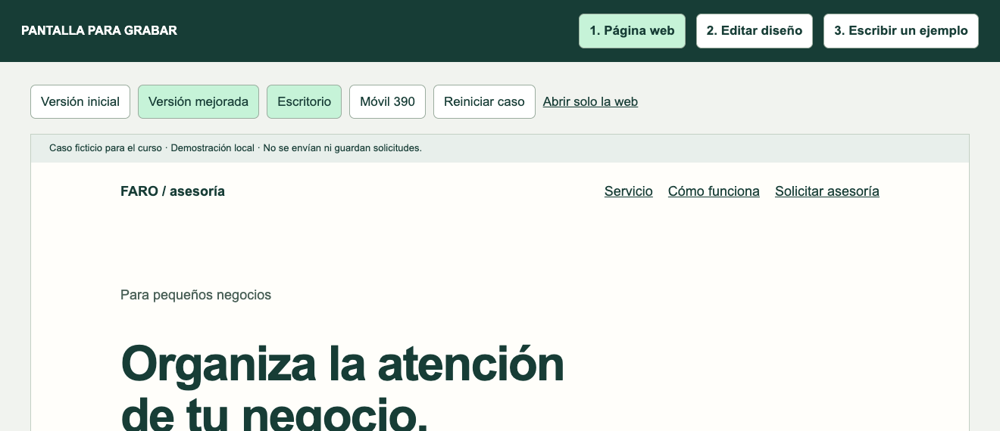

GUÍA DEL PROFESOR · GUION AMPLIADOUX/UI PARA PÁGINAS WEB
EMPIEZA POR ESTA GUÍA
Qué hacer en pantalla y qué decir en cada momento.
Un guion desarrollado para preparar y grabar las 24 clases del curso. Conserva los seis módulos, los ejercicios y las cuatro horas previstas en el programa del estudiante.
Tu ruta para empezar
Abre PANTALLA-PARA-GRABAR.html en el navegador. Mantén esta guía en otra ventana, fuera del área grabada. Ve a la clase 1.1 de esta guía y prepara la pantalla indicada. Ensaya una vez sus acciones antes de grabar.
Cómo está organizada cada clase
Primera páginaPreparación exacta, apertura literal y pasos 1 y 2. Incluye una comparación adicional para ensayar y cómo resolver un tropiezo.Segunda páginaPasos 3, 4 y 5, ejercicio para el alumno, una respuesta de referencia y cierre literal.
Qué lees tú y qué dices en voz alta
Prepara, Haz, Comprueba y Si te atoras: instrucciones para ti. No las leas al alumno.
Di al abrir, Di y Di al cerrar: texto completo que puedes decir en voz alta.
Pide este ejercicio: frase para que el alumno pause y practique.
Después de la pausa: explicación de una posible respuesta. No significa que todas deban ser idénticas.
Tu primera frase del curso
«En este curso vamos a aprender a tomar decisiones de UX/UI con una página de ejemplo. Verás problemas, cambios y sus razones. Cuando aparezca un ejercicio, pausa el video y pruébalo. Al final presentarás tres mejoras explicando qué dificultad atiende cada una.»
Qué necesitas preparar
Computador, navegador, micrófono y esta carpeta completa. No necesitas crear un archivo de Figma ni programar para seguir las demostraciones. Para la clase 6.2 prepara un participante o identifica el ensayo como simulación.
El guion es una base literal para ensayar. Puedes adaptar el tono conservando el significado, las acciones y el ejercicio. No necesitas memorizar todo el documento para empezar con una clase.
GUÍA DEL PROFESOR · GUION AMPLIADOUX/UI PARA PÁGINAS WEB
CONOCE LA PANTALLA
Página, boceto y pizarra: tres usos distintos.

1. Página web: demostrar un recorrido
Usa «Versión inicial» para mostrar problemas y «Versión mejorada» para mostrar una propuesta. Aquí funcionan los enlaces y el formulario simulado. «Escritorio» y «Móvil 390» cambian el ancho. «Reiniciar caso» permite repetir la demostración.
2. Editar diseño: cambiar un boceto delante del alumno
Selecciona palabras dentro de un texto y escribe para reemplazarlas. «Subir» y «Bajar» cambian el orden de las tarjetas. Los controles de tamaño y separación modifican su aspecto. El botón verde es editable: no envía nada. El taller no modifica la página preparada.
3. Escribir un ejemplo: tu pizarra de trabajo
Selecciona el número de clase y escribe después de sus etiquetas. Sirve para mostrar objetivos, preguntas y observaciones. No genera páginas ni envía tareas. En la guía lo llamaremos también «pizarra», manteniendo el nombre del botón real.
Di al usar la pizarra por primera vez
«Aquí voy a escribir cómo estoy pensando el diseño. Lo que anote no cambia la página. Primero dejamos claro el objetivo o el problema; después vamos al ejemplo para relacionarlo con una decisión visible.»
Antes de cerrar o reiniciar
En la pizarra pulsa «Guardar lo que escribí». Captura el boceto si quieres conservar sus cambios. Reiniciar el taller elimina modificaciones. Al cerrar o recargar no debes contar con recuperar texto que no descargaste.
Faro y sus condiciones son ficticios. El formulario no envía información real. Usa Ana y ana@example.com en las demostraciones. Mantén la carpeta «recursos» junto a los archivos HTML.
GUÍA DEL PROFESOR · GUION AMPLIADOUX/UI PARA PÁGINAS WEB
MISMO CURSO, DOS DOCUMENTOS
Cómo se alinea con el material del estudiante.
Esta guía desarrolla exactamente las clases 1.1 a 6.4 del programa. El estudiante ve la demostración y practica; tú utilizas estas instrucciones para prepararla, explicarla y comentar el ejercicio.
Módulo
Contenido
Esta guía
Estudiante
01
Fundamentos de UX/UI Clases 1.1 a 1.4 · 30 min previstos
pp. 5-12
p. 4
02
Usuarios y organización del contenido Clases 2.1 a 2.4 · 35 min previstos
pp. 13-20
p. 5
03
Fundamentos visuales de UI Clases 3.1 a 3.4 · 40 min previstos
pp. 21-28
p. 6
04
Heurísticas aplicadas a una web Clases 4.1 a 4.4 · 55 min previstos
pp. 29-36
p. 7
05
Aplicación práctica a la página Clases 5.1 a 5.4 · 40 min previstos
pp. 37-44
p. 8
06
Prueba, mejora y presentación Clases 6.1 a 6.4 · 40 min previstos
pp. 45-52
p. 9
Heurísticas: el refuerzo solicitado
La clase 4.1 comienza explicando qué es una heurística y cómo orienta una mejora. Las clases 4.1, 4.2 y 4.3 desarrollan las diez con problema, demostración y beneficio esperado. La 4.4 convierte lo encontrado en una ficha de trabajo.
En el PDF del estudiante, las páginas 10 a 12 amplían esa explicación. Utilízalas como lectura de apoyo; en la grabación muestra la página y realiza las acciones descritas aquí.
Proyecto final
Las clases construyen el objetivo, la estructura, los hallazgos y las mejoras. En 6.4 el estudiante presenta tres cambios en un video breve. El proyecto y su autoevaluación están en las páginas 13 y 14 del programa; aquí tienes orientación para explicarlos en la página 53.
Sobre las cuatro horas
Los tiempos de clase suman 240 minutos previstos de video. No son un cronómetro garantizado por leer el guion: incluyen explicación y demostraciones. Las pausas de práctica autónoma van aparte. Cronometra una toma piloto para ajustar profundidad y ritmo; no completes tiempo con silencios o repeticiones.
La página 54 reúne dudas frecuentes y referencias. El programa del estudiante está incluido en esta carpeta como «programa-estudiantes.pdf».
GUÍA DEL PROFESOR · GUION AMPLIADOUX/UI PARA PÁGINAS WEB
ANTES DE PULSAR GRABAR
Prepara una clase y grábala por partes.
Abre los dos materiales. Guía para ti y pantalla de práctica para el alumno. Coloca la guía fuera del área que vas a grabar; puede estar en otra pantalla, impresa o en una ventana que no captures.
Ensaya la preparación. Sigue «Prepara antes de grabar». Deja la versión, pestaña y datos en el estado indicado. Así cada clase puede grabarse de forma independiente.
Haz una prueba breve. Graba treinta segundos diciendo una apertura y realizando un clic. Reproduce el resultado: comprueba voz, tamaño del texto y que el cursor se vea.
Graba la apertura y una acción. Haz el movimiento indicado, espera a que se vea el resultado y explica su significado con el texto «Di». Si hablas mientras se desplaza la página, hazlo sin correr.
Continúa en fragmentos. Puedes detenerte para consultar el siguiente paso fuera de la toma y grabar otro fragmento. Al unirlos, conserva el orden de las acciones y el estado de la página.
Pide el ejercicio. Lee la instrucción y pide pausar. No dejes varios minutos de silencio. A continuación graba el comentario de la respuesta y el cierre.
Revisa y nombra. Comprueba que lo que dices coincide con lo que se ve. Guarda, por ejemplo, M01-L01-toma01.mov.
Si grabas en Mac
Pulsa Mayúsculas + Comando + 5, selecciona la opción para grabar una parte de la pantalla y delimita la ventana de práctica. En Opciones elige el micrófono. Pulsa Grabar y detén desde el control de la barra de menús. La interfaz puede variar según la versión del sistema.
Ensaya el párrafo mirando el elemento al que se refiere. Puedes dividirlo en dos frases y señalar mientras explicas. Si hay una pregunta retórica al alumno, deja un instante para que mire, pero no inventes su respuesta.
Para la clase con participante
En 6.2 graba primero las instrucciones, después el intento y al final tu explicación. No leas comentarios de diseño mientras la persona intenta la tarea. Las frases dirigidas al participante se distinguen de las dirigidas al alumno.
GUÍA DEL PROFESOR · GUION AMPLIADOUX/UI PARA PÁGINAS WEB
CLASE 1.1 · PARTE A: PREPARAR Y EMPEZAR
Qué es UX y qué es UI
Tiempo objetivo: 8 min · Programa del estudiante: p. 4 · Pantalla: Página web
Prepara antes de grabar
En «1. Página web», pulsa «Reiniciar caso» y deja la vista en «Escritorio». Pulsa “1. Página web” y después “Versión inicial”. Lleva la página hasta arriba.
Di al abrir la clase
«Bienvenido. Vamos a empezar con una pregunta: ¿una página que se ve bien necesariamente se entiende bien? Voy a mostrarte dos versiones de la misma web. No necesitas saber diseñar ni programar. Primero miraremos qué aparece en pantalla y después intentaremos completar una tarea: pedir información sobre un servicio.»
Paso 1 · Haz en pantalla
Señala con el cursor “Impulsa tu potencial”.
No hagas clic todavía.
DI
«Si entraras por primera vez, ¿sabrías qué vende esta empresa? El título llama la atención, pero no explica el servicio. Mira el título y pregúntate qué podrías contratar aquí. «Potencial» puede hablar de muchas cosas. Este es un buen punto de partida: antes de valorar colores o fotografías, necesito entender la oferta. Por ahora estamos señalando una posible dificultad; todavía no hemos observado a un usuario real.»
Comprueba: Título genérico y botón “Más”.
Paso 2 · Haz en pantalla
Pulsa “Más”.
Observa que baja al formulario.
Señala “Dato 1” y “Dato 2”.
DI
«Puedo llegar al formulario, pero no sé qué me están pidiendo. La experiencia incluye entender cada paso, no solo llegar a él. Fíjate en «Dato 1». ¿Pide mi nombre, mi empresa o un número? Yo conozco el ejercicio, pero alguien que entra por primera vez no tiene esa información. El botón funciona y, aun así, la tarea puede resultar confusa. Funcionar técnicamente no basta para que algo sea fácil de usar.»
Comprueba: El formulario con nombres poco claros.
Comparación adicional para ensayar
Antes de cerrar, señala «Más» y pregunta en voz alta: «¿Más de qué?». Después señala «Solicitar asesoría». Explica qué acción anticipa cada texto, sin volver a repetir toda la comparación.
Si te atoras
Si «Más» no desplaza la página, comprueba que estás en «1. Página web» y «Versión inicial». El botón verde de «Editar diseño» es texto editable y no abre el formulario.
GUÍA DEL PROFESOR · GUION AMPLIADOUX/UI PARA PÁGINAS WEB
CLASE 1.1 · PARTE B: DEMOSTRAR Y CERRAR
Continúa la clase 1.1
Sigue desde el paso 2; no reinicies la pantalla.
Paso 3 · Haz en pantalla
En la barra superior pulsa “Versión mejorada”.
Señala el título y lee su descripción.
DI
«Ahora sabemos que Faro ayuda a organizar la atención de un negocio. UI es lo que usamos en pantalla; UX incluye qué entendemos y cómo completamos la tarea. Cuando digo UI, me refiero a la interfaz: los textos, campos, botones y su presentación. Cuando digo UX, hablo de la experiencia de la persona al intentar lograr algo. En este caso nos preguntamos si comprende el servicio, sabe cómo solicitarlo y entiende la respuesta.»
Comprueba: La oferta explícita y el botón “Solicitar asesoría”.
Paso 4 · Haz en pantalla
Pulsa “Solicitar asesoría” dentro de la web.
Señala las etiquetas de nombre y correo.
DI
«La apariencia del campo forma parte de la interfaz. Entender qué escribir y por qué facilita la experiencia. Ambas trabajan juntas. Señalo «Nombre» y «Correo» porque ahora cada campo me orienta. El color y el tamaño permiten distinguirlo, mientras que la etiqueta explica su función. No estamos separando dos trabajos que nunca se tocan: una decisión sobre la interfaz puede facilitar o dificultar la experiencia.»
Comprueba: Formulario con etiquetas visibles y explicación.
Paso 5 · Haz en pantalla
Alterna “Versión inicial” y “Versión mejorada” una última vez.
DI
«El cambio no se justifica solo por verse más bonito. Se justifica porque permite comprender mejor el servicio y la solicitud. Si presentara esta mejora a un cliente, explicaría el cambio así: antes la oferta era difícil de identificar; ahora el título dice para qué sirve la asesoría. Este razonamiento es más útil que decir solamente «la nueva versión me gusta». Después podremos comprobar si otras personas la entienden.»
Comprueba: Las dos versiones muestran un antes y un después concreto.
Pide este ejercicio al alumno
«Pausa el video. Escribe una cosa que veas en la interfaz y una dificultad que podría tener quien la usa.»
Después de la pausa, comenta una respuesta
«Una respuesta posible es: «Veo un botón y dos campos; la dificultad es que Dato 1 no explica qué debo escribir». El botón es un elemento de interfaz. La duda al intentar usarlo forma parte de la experiencia. Puedes encontrar otros ejemplos y explicarlos del mismo modo.»
Di al cerrar la clase
«Quédate con esta idea: diseñamos lo que aparece en pantalla para ayudar a una persona a lograr algo. En la siguiente clase vamos a distinguir tres preguntas: si le sirve, si resulta fácil y si puede utilizarlo.»
GUÍA DEL PROFESOR · GUION AMPLIADOUX/UI PARA PÁGINAS WEB
CLASE 1.2 · PARTE A: PREPARAR Y EMPEZAR
Usabilidad, utilidad y accesibilidad
Tiempo objetivo: 8 min · Programa del estudiante: p. 4 · Pantalla: Página web
Prepara antes de grabar
En «1. Página web», pulsa «Reiniciar caso» y deja la vista en «Escritorio». Pulsa “1. Página web” > “Versión inicial”.
Di al abrir la clase
«Ahora vamos a revisar tres cosas diferentes: utilidad, usabilidad y accesibilidad. Para no quedarnos en definiciones, utilizaremos el mismo formulario. Imagina que necesitas información del servicio. Vamos a mirar si esta página te ayuda con esa necesidad y qué obstáculos aparecen cuando intentas usarla.»
Paso 1 · Haz en pantalla
Pulsa “Entrar” en el menú de la web.
Señala los dos campos.
DI
«Utilidad significa que esto sirva para una necesidad. Aquí queremos solicitar información. Pero que exista un formulario no significa que sea fácil de usar. Piensa en utilidad como «esto responde a lo que necesito». Si busco una asesoría, una página que explica el servicio y permite preguntar puede ser útil. Después aparece otra pregunta: ¿puedo conseguirlo de una manera comprensible? Esa segunda pregunta nos acerca a la usabilidad.»
Comprueba: Campos “Dato 1” y “Dato 2”.
Paso 2 · Haz en pantalla
Haz clic en “Dato 2” y escribe ana@example.com.
DI
«El campo acepta texto, pero su nombre no explica qué espera. Esa duda es un problema de usabilidad. Escribo un correo porque ya sé qué espera el ejercicio. Pero ese conocimiento lo estoy aportando yo, no la interfaz. Cuando revises una web, intenta notar cuántas decisiones dependen de información que el visitante no tiene. Una etiqueta puede evitar esa duda antes de que aparezca.»
Comprueba: Un correo escrito en un campo cuyo nombre era ambiguo.
Comparación adicional para ensayar
Repite el recorrido por dos campos: pulsa Tab para avanzar y Shift + Tab para volver. Nombra el campo que tiene el contorno antes de mover el foco otra vez.
Si te atoras
Si Tab recorre controles de la barra superior, haz clic dentro del formulario y vuelve a pulsarlo. Mantén la ventana activa. Si tu navegador no enfoca ciertos enlaces, revisa su configuración de navegación por teclado antes de grabar.
GUÍA DEL PROFESOR · GUION AMPLIADOUX/UI PARA PÁGINAS WEB
CLASE 1.2 · PARTE B: DEMOSTRAR Y CERRAR
Continúa la clase 1.2
Sigue desde el paso 2; no reinicies la pantalla.
Paso 3 · Haz en pantalla
Pulsa “Versión mejorada”.
Señala el texto y las etiquetas del formulario.
DI
«También debemos poder percibir y usar la página. Una etiqueta clara o un texto legible ayudan a que más personas puedan participar. Accesibilidad significa tener en cuenta diferentes capacidades y maneras de interactuar. Aquí vamos a comprobar algunas cosas sencillas: que el texto se perciba y que los controles puedan recorrerse con teclado. Son ejemplos iniciales; no constituyen una evaluación completa de accesibilidad.»
Comprueba: Etiquetas persistentes y texto oscuro.
Paso 4 · Haz en pantalla
Haz clic en el fondo de la web y pulsa Tab varias veces.
Mira el borde del elemento enfocado.
DI
«También puedo moverme con teclado. Este borde me dice dónde estoy. No estoy comprobando toda la accesibilidad; estoy revisando una parte. Observa que el contorno cambia de lugar cada vez que pulso Tab. Ese indicador se llama foco y muestra qué control recibirá la próxima acción. Mantén la vista en él, no en el cursor del ratón. Si no pudiera verlo, sería difícil saber dónde estoy al navegar así.»
Comprueba: Un contorno visible cambia entre enlaces y controles.
Paso 5 · Haz en pantalla
Pulsa Shift + Tab una vez para volver al control anterior.
DI
«La tarea debe poder recorrerse y comprenderse. Útil, usable y accesible son preguntas relacionadas que debemos revisar. Acabo de retroceder con el teclado. No he necesitado volver a buscar el campo con el ratón. Podemos revisar la misma tarea desde varias preguntas: ¿me sirve?, ¿entiendo qué hacer?, ¿puedo percibir y operar sus controles? Ninguna de las tres se resuelve solo con una apariencia agradable.»
Comprueba: El foco retrocede un elemento.
Pide este ejercicio al alumno
«Pausa el video. Encuentra una palabra confusa y una barrera de lectura en la versión inicial.»
Después de la pausa, comenta una respuesta
«Puedes escribir: «Dato 2 es confuso porque no dice que pide un correo; un texto pequeño o poco contrastado puede dificultar su lectura». Señala el elemento concreto. Evita concluir que toda la página es inaccesible a partir de una única observación.»
Di al cerrar la clase
«Hoy comprobamos que ofrecer una función es solo el inicio. También debemos explicar cómo usarla y considerar distintas formas de interacción. Enseguida vamos a definir con más precisión qué necesita hacer el visitante.»
GUÍA DEL PROFESOR · GUION AMPLIADOUX/UI PARA PÁGINAS WEB
CLASE 1.3 · PARTE A: PREPARAR Y EMPEZAR
Objetivos de la persona y del negocio
Tiempo objetivo: 7 min · Programa del estudiante: p. 4 · Pantalla: Escribir un ejemplo y página web
Prepara antes de grabar
En «1. Página web», pulsa «Reiniciar caso» y deja la vista en «Escritorio». Pulsa “3. Escribir un ejemplo”. En “Ejemplo de la clase” elige “1.3”.
Di al abrir la clase
«Antes de elegir tamaños o colores, necesitamos un objetivo. Voy a utilizar la pestaña «Escribir un ejemplo» como una pizarra. Lo que anote aquí no cambia la web: nos ayuda a dejar claro para quién diseñamos, qué necesita hacer esa persona y cómo sabremos si la propuesta se entiende.»
Paso 1 · Haz en pantalla
Haz clic después de “Pedido inicial:” y escribe “Quiero una web moderna”.
DI
«Este pedido habla de apariencia. Todavía no dice qué necesita hacer el visitante. «Moderna» describe una preferencia, pero dos personas podrían imaginar cosas distintas. Necesito convertir ese pedido en algo que pueda orientar decisiones. No voy a borrar la intención de que se vea bien; voy a añadir el problema que debe resolver para que podamos diseñar con un propósito.»
Comprueba: La frase escrita en el documento de pantalla.
Paso 2 · Haz en pantalla
Completa “La persona necesita:” con “Saber si Faro puede ayudarle y cómo pedir información”.
DI
«Primero definimos la necesidad. Diseñaremos alrededor de ella. En nuestro caso, el visitante necesita saber si el servicio encaja con su situación. Después necesita una forma de preguntar. Fíjate en que estoy hablando de la persona y su tarea, no del número de botones. El objetivo del negocio, recibir consultas, se conecta con esa necesidad.»
Comprueba: Una necesidad concreta, distinta del pedido estético.
Comparación adicional para ensayar
Vuelve a la pizarra y lee la necesidad y la acción seguidas. Pregunta: «¿Esta acción ayuda a resolver esa necesidad?». Explica la relación usando las palabras que acabas de escribir.
Si te atoras
Si aparecen notas de otra clase, selecciona 1.3 en «Ejemplo de la clase». Si ya escribiste algo que quieres conservar, pulsa «Guardar lo que escribí» antes de cargar de nuevo la plantilla.
GUÍA DEL PROFESOR · GUION AMPLIADOUX/UI PARA PÁGINAS WEB
CLASE 1.3 · PARTE B: DEMOSTRAR Y CERRAR
Continúa la clase 1.3
Sigue desde el paso 2; no reinicies la pantalla.
Paso 3 · Haz en pantalla
Completa “Acción principal:” con “Solicitar una conversación inicial”.
DI
«Esta será la acción que destacaremos. La empresa recibe una consulta y la persona sabe qué está pidiendo. Ahora sí puedo decidir qué acción debe destacar. Podría poner diez botones, pero primero necesito saber qué paso quiero facilitar. «Solicitar una conversación inicial» define un resultado concreto. Más adelante revisaremos que el texto del botón y la respuesta del formulario sean coherentes con ese resultado.»
Comprueba: Una sola acción principal.
Paso 4 · Haz en pantalla
Completa “Cómo lo comprobaré:” con “La persona explica el servicio y llega a la confirmación”.
DI
«Esto se puede observar. Decir “se ve moderno” no demuestra que la solicitud se entienda. Voy a observar dos cosas: si alguien puede explicar la oferta con sus palabras y si llega a la confirmación. Eso no demuestra todo sobre la experiencia, pero es más concreto que una impresión estética. Así dejamos preparada una comprobación que retomaremos cuando hagamos la prueba.»
Comprueba: Un criterio observable.
Paso 5 · Haz en pantalla
Pulsa “1. Página web” > “Versión mejorada”.
Señala “Solicitar asesoría”.
DI
«Este botón existe porque antes definimos la tarea. La decisión de diseño responde a un objetivo. Mira cómo se relacionan ambos materiales: la pizarra contiene el objetivo y la página muestra una decisión que lo apoya. No se ha generado un botón automáticamente por escribir. Estamos conectando nuestro razonamiento con una interfaz preparada para demostrarlo.»
Comprueba: La acción del documento reflejada en la página.
Pide este ejercicio al alumno
«Pausa el video. Escribe qué necesita tu visitante y una acción principal que deba poder realizar.»
Después de la pausa, comenta una respuesta
«Para Faro, podrías escribir: «La persona necesita saber si la asesoría le ayuda a organizar sus consultas; su acción principal será pedir información». Para tu proyecto cambia la necesidad y la acción, pero conserva esa relación. «Necesita una web bonita» todavía no describe la tarea del visitante.»
Di al cerrar la clase
«Ya tenemos una dirección para el diseño: una persona, una necesidad y una acción. En la siguiente clase veremos cómo ese objetivo pasa a un esquema, una interfaz y una prueba.»
GUÍA DEL PROFESOR · GUION AMPLIADOUX/UI PARA PÁGINAS WEB
CLASE 1.4 · PARTE A: PREPARAR Y EMPEZAR
El proceso de diseño aplicado a una web
Tiempo objetivo: 7 min · Programa del estudiante: p. 4 · Pantalla: Editar diseño y página web
Prepara antes de grabar
En «1. Página web», pulsa «Reiniciar caso» y deja la vista en «Escritorio». En «2. Editar diseño», pulsa «Reiniciar taller». Pulsa “2. Editar diseño” > “Reiniciar taller”.
Di al abrir la clase
«Vamos a recorrer el proceso completo de manera sencilla. Primero entendemos qué se necesita; después organizamos el contenido; luego trabajamos su presentación, probamos el recorrido y mejoramos. Hoy verás los materiales que utilizaremos en esas etapas. No tienes que construirlos desde cero para seguir el curso.»
Paso 1 · Haz en pantalla
Señala los bloques Oferta, Beneficios, Cómo funciona, Preguntas frecuentes y Contacto.
DI
«Esto es un esquema. Nos sirve para decidir qué contenido aparece y en qué orden. Un wireframe es un boceto de estructura. Un wireframe es un boceto de estructura. En este taller, las tarjetas nos permiten discutir qué información debería aparecer y con qué orden. Todavía no estamos resolviendo todos los detalles visuales. Si no sabemos qué cuenta cada sección, decorarla no corrige esa falta de contenido.»
Comprueba: Cinco bloques con su título.
Paso 2 · Haz en pantalla
Pulsa “Bajar” en Oferta.
Después pulsa “Subir” en ese mismo bloque.
DI
«Puedo discutir el orden antes de diseñar todos los detalles. Cada movimiento debería tener una razón. Al mover Oferta, cambia lo que aparece primero. Imagina que la persona encuentra el contacto antes de entender el servicio. Tal vez necesite volver atrás para resolver una duda. Por eso cada movimiento debe responder a una razón; ordenar también es una decisión de experiencia.»
Comprueba: Oferta cambia de posición y vuelve al inicio.
Comparación adicional para ensayar
Alterna una vez entre «Editar diseño» y «Página web». Nombra qué pregunta responde cada vista: «¿qué contenido va y en qué orden?» frente a «¿cómo se presenta y cómo se usa?».
Si te atoras
Si el envío se queda en error, comprueba que usaste Ana y ana@example.com. Espera a que aparezca la confirmación antes de pulsar «Nueva demostración».
GUÍA DEL PROFESOR · GUION AMPLIADOUX/UI PARA PÁGINAS WEB
CLASE 1.4 · PARTE B: DEMOSTRAR Y CERRAR
Continúa la clase 1.4
Sigue desde el paso 2; no reinicies la pantalla.
Paso 3 · Haz en pantalla
Pulsa “1. Página web” > “Versión mejorada”.
DI
«Aquí vemos la página desarrollada visualmente: textos, espacios, colores y controles. Ahora cambia el nivel de detalle. Ya podemos ver cómo se presenta el contenido en una interfaz. La estructura nos ayudó a decidir qué contar; los textos, espacios y controles nos ayudan a mostrarlo. El boceto y esta página están preparados por separado para enseñar esa diferencia.»
Comprueba: La página completa de Faro.
Paso 4 · Haz en pantalla
Pulsa “Solicitar asesoría”; escribe Ana y ana@example.com y pulsa el botón de envío.
DI
«Un prototipo permite probar acciones. Este ejemplo simula el envío para enseñar sus estados; no manda datos a ninguna empresa. Cuando envío, puedo observar estados y una respuesta. Eso permite conversar sobre la interacción y no únicamente sobre una imagen estática. Es una demostración local: no estamos contratando un servicio ni enviando información a una empresa. Usamos datos ficticios para repetir el recorrido.»
Comprueba: Primero “Enviando” y después “Solicitud recibida”.
Paso 5 · Haz en pantalla
Pulsa “Nueva demostración”.
DI
«Nuestro proceso será entender, organizar, diseñar, probar y mejorar. Hoy ya vimos qué tipo de material nos ayuda en cada etapa. El proceso no termina cuando la página ya se ve terminada. Si al probarla aparece una duda, podemos volver al texto, a la estructura o al comportamiento. No hace falta defender una decisión solo porque ya la dibujamos; podemos revisarla con un motivo.»
Comprueba: Formulario vacío listo para repetir.
Pide este ejercicio al alumno
«Pausa el video. Escribe qué decidirías primero: el orden del contenido, el color o la prueba del envío. Explica tu razón.»
Después de la pausa, comenta una respuesta
«Una respuesta razonable es empezar por el objetivo y el orden del contenido, porque antes de elegir un color necesito saber qué voy a comunicar. Luego puedo desarrollar la presentación y probar la interacción. El proceso puede repetirse: una prueba puede hacerme volver a organizar.»
Di al cerrar la clase
«Ya reconoces tres materiales: el esquema para organizar, la interfaz para presentar y la simulación para probar acciones. Ahora vamos a profundizar en las preguntas que necesitamos responder antes de ordenar la página.»
GUÍA DEL PROFESOR · GUION AMPLIADOUX/UI PARA PÁGINAS WEB
CLASE 2.1 · PARTE A: PREPARAR Y EMPEZAR
Necesidades, contexto y preguntas al usuario
Tiempo objetivo: 10 min · Programa del estudiante: p. 5 · Pantalla: Escribir un ejemplo
Prepara antes de grabar
Pulsa “3. Escribir un ejemplo” y elige “2.1”.
Di al abrir la clase
«Vamos a preparar preguntas para entender a quien visitará la página. Lo primero es separar lo que sabemos de lo que suponemos. En la pizarra hay un dato del caso: Faro ofrece una conversación inicial de treinta minutos. A partir de ahí veremos qué tendríamos que preguntar a personas reales.»
Paso 1 · Haz en pantalla
Lee el bloque “Dato del caso”.
DI
«Esto nos lo da el ejercicio: Faro ofrece una conversación inicial de treinta minutos. Este dato forma parte del ejercicio y nos permite trabajar con el mismo servicio. No proviene de una entrevista que acabemos de hacer. Esa diferencia importa: cuando documentes un proyecto, identifica de dónde sale cada afirmación para que nadie confunda una condición del negocio con una conclusión sobre sus usuarios.»
Comprueba: Un dato de la empresa ficticia.
Paso 2 · Haz en pantalla
En “Lo que supongo:” escribe “El visitante entiende la palabra asesoría”.
DI
«Esto todavía es una suposición. No voy a presentarlo como algo que comprobé con personas. Yo puedo creer que «asesoría» se entiende, pero necesito comprobarlo. Escribir la suposición me ayuda a reconocer qué desconozco. No es un error tener hipótesis; el problema sería presentarlas como hechos y diseñar todo el recorrido sin revisar si son razonables.»
Comprueba: El supuesto separado del dato.
Comparación adicional para ensayar
Lee la pregunta que evitarías con tono de aprobación y después la pregunta abierta con tono neutral. Explica cómo cambia el espacio que le das a la otra persona para responder.
Si te atoras
No completes la pizarra con respuestas atribuidas a usuarios inexistentes. Si quieres ilustrar una respuesta, di expresamente «voy a inventar una respuesta para explicar el ejercicio».
GUÍA DEL PROFESOR · GUION AMPLIADOUX/UI PARA PÁGINAS WEB
CLASE 2.1 · PARTE B: DEMOSTRAR Y CERRAR
Continúa la clase 2.1
Sigue desde el paso 2; no reinicies la pantalla.
Paso 3 · Haz en pantalla
En “Pregunta que evitaré:” escribe “¿Te gusta esta página tan clara?”.
DI
«Esta pregunta incluye mi opinión y puede orientar la respuesta. La palabra «clara» ya contiene mi valoración. Si pregunto así, estoy sugiriendo qué respuesta espero. Además, que alguien diga que le gusta no me explica cómo hizo una tarea. Voy a cambiar la pregunta para escuchar una experiencia en lugar de pedir aprobación.»
Comprueba: Una pregunta que sugiere una valoración.
Paso 4 · Haz en pantalla
En “Pregunta que haré:” escribe “Cuéntame la última vez que buscaste ayuda para atender consultas”.
DI
«Ahora pregunto por una experiencia. Puedo escuchar qué pasó sin ofrecerle una respuesta. Esta pregunta invita a relatar algo que ocurrió. Después podríamos profundizar: qué buscó, qué no encontró y qué hizo para continuar. No estoy pidiendo que invente la interfaz ideal. Estoy buscando información que nos ayude a comprender sus necesidades y su contexto.»
Comprueba: Una pregunta abierta sobre un hecho pasado.
Paso 5 · Haz en pantalla
Añade “¿Qué información buscaste antes de contactar?” en “Otra pregunta:”.
DI
«Las respuestas pueden cambiar qué contenido necesitamos mostrar. Primero escuchamos; después decidimos. Si aparece repetidamente una duda sobre el alcance, probablemente debamos explicarlo mejor en la página. Aquí todavía no tenemos respuestas reales, así que no vamos a inventarlas. Solo estamos preparando preguntas que después podremos utilizar y registrar.»
Comprueba: Dos preguntas utilizables en una conversación.
Pide este ejercicio al alumno
«Pausa el video. Escribe dos preguntas sobre experiencias reales. Evita las que solo se responden sí o no.»
Después de la pausa, comenta una respuesta
«Puedes preguntar: «Cuéntame la última vez que pediste información sobre un servicio» y «¿Qué necesitaste saber antes de contactar?». Las dos permiten describir una experiencia. Una pregunta como «¿No te parece fácil?» ya sugiere una valoración y aporta menos información.»
Di al cerrar la clase
«Tenemos un dato, una suposición y preguntas para aprender. El siguiente paso será organizar las dudas que pueden aparecer a lo largo del recorrido, sin confundir posibilidades con resultados de investigación.»
GUÍA DEL PROFESOR · GUION AMPLIADOUX/UI PARA PÁGINAS WEB
CLASE 2.2 · PARTE A: PREPARAR Y EMPEZAR
Recorrido del visitante y puntos de fricción
Tiempo objetivo: 8 min · Programa del estudiante: p. 5 · Pantalla: Escribir un ejemplo y página web
Prepara antes de grabar
En «1. Página web», pulsa «Reiniciar caso» y deja la vista en «Escritorio». Pulsa “3. Escribir un ejemplo” y elige “2.2”.
Di al abrir la clase
«Una persona no entra a una web pensando en nuestras secciones. Suele llegar con preguntas: qué ofrecen, si le sirve y qué debe hacer. Vamos a ordenar esas preguntas para entender el recorrido. Después comprobaremos dónde encuentra una respuesta en la página del ejemplo.»
Paso 1 · Haz en pantalla
En la primera fila escribe “¿Qué ofrece Faro?” después de “Comprender”.
DI
«Primero la persona necesita entender si llegó al sitio adecuado. La primera duda aparece antes de completar ningún formulario. Si no sé qué ofrece la empresa, es difícil decidir si quiero contactar. Escribo la pregunta tal como podría formularla un visitante. Eso nos ayuda a diseñar contenido con una función concreta.»
Comprueba: La primera pregunta del recorrido.
Paso 2 · Haz en pantalla
Completa las otras tres filas con “¿Cómo funciona?”, “¿Cómo lo solicito?” y “¿Llegó mi solicitud?”.
DI
«El recorrido es una secuencia de preguntas y respuestas, no solo una lista de pantallas. Estas cuatro etapas describen lo que necesita comprender la persona. No significan que todos actuarán siempre en este orden, pero nos permiten revisar el ejemplo. Observa que después de enviar también existe una pregunta: necesito saber si mi solicitud llegó y qué sucede a continuación.»
Comprueba: Cuatro pasos completos.
Comparación adicional para ensayar
En la versión mejorada, señala «Así funciona» y después la respuesta a «¿Ya queda reservada una hora?» en las preguntas frecuentes. Explica qué información describe el servicio y cuál aclara lo que ocurrirá después de solicitar.
Si te atoras
Si estás en vista móvil y el contenido queda muy estrecho, pulsa «Escritorio» para esta comparación. La vista móvil se trabajará de manera específica más adelante.
GUÍA DEL PROFESOR · GUION AMPLIADOUX/UI PARA PÁGINAS WEB
CLASE 2.2 · PARTE B: DEMOSTRAR Y CERRAR
Continúa la clase 2.2
Sigue desde el paso 2; no reinicies la pantalla.
Paso 3 · Haz en pantalla
Pulsa “1. Página web” > “Versión inicial”.
Busca la duración de la asesoría.
DI
«Aquí no encuentro información para saber cómo funciona. Esa ausencia puede dificultar la decisión. Voy a buscar la duración con la mirada y bajando por la página. No aparece una explicación suficiente. Esto podría generar una duda: quizá la persona necesita saber cuánto tiempo le tomará antes de solicitar. Señalamos la ausencia y su posible efecto, sin inventar cuántos visitantes abandonarían.»
Comprueba: La versión inicial no explica duración ni alcance.
Paso 4 · Haz en pantalla
Pulsa “Versión mejorada”.
Busca el título “Así funciona”.
DI
«Ahora hay una respuesta para esa pregunta: qué envío, cuándo responden y cuánto dura la conversación. Ahora la sección ofrece información para responder a esa duda. No hemos añadido contenido por llenar espacio; lo añadimos para ayudar a decidir. Conecta cada frase con la pregunta correspondiente: qué pasa al enviar, cuándo hay respuesta y cuál es el alcance de la conversación.»
Comprueba: Proceso y condiciones visibles.
Paso 5 · Haz en pantalla
Regresa a “3. Escribir un ejemplo”.
Añade “Posible dificultad: no saber qué ocurre después del envío”.
DI
«Es una dificultad posible. Para saber cómo afecta a una persona necesitamos observarla usando la página. Una fricción es algo que dificulta avanzar. Puede ser una etiqueta confusa, una respuesta ausente o un paso inesperado. Aquí registramos una posibilidad para revisarla. Cuando observemos una prueba, podremos añadir hechos sobre lo que ocurrió realmente.»
Comprueba: Una dificultad descrita, sin inventar una prueba.
Pide este ejercicio al alumno
«Pausa el video. Anota una pregunta que podría tener tu visitante antes de contactar.»
Después de la pausa, comenta una respuesta
«Un ejemplo es: «¿Enviar este formulario ya reserva una cita?». Esa duda debería tener una respuesta cerca del momento de solicitar. También podrías preguntar por duración o alcance. Lo importante es indicar qué necesita saber la persona y dónde esperaría encontrarlo.»
Di al cerrar la clase
«El recorrido nos ayuda a organizar información alrededor de preguntas. En la próxima clase vamos a convertir esas preguntas en nombres y posiciones de secciones que ayuden a orientarse.»
GUÍA DEL PROFESOR · GUION AMPLIADOUX/UI PARA PÁGINAS WEB
CLASE 2.3 · PARTE A: PREPARAR Y EMPEZAR
Arquitectura de la información y navegación
Tiempo objetivo: 9 min · Programa del estudiante: p. 5 · Pantalla: Editar diseño
«Arquitectura de la información significa organizar y nombrar el contenido para que se pueda encontrar y comprender. Vamos a demostrarlo con cinco tarjetas. Cambiaremos una posición y un nombre; después explicaremos por qué esas decisiones pueden facilitar o dificultar el recorrido.»
Paso 1 · Haz en pantalla
Pulsa “Subir” en Contacto tres veces, hasta dejarlo después de Oferta.
DI
«Acabo de cambiar el orden. Pedir datos tan pronto puede resultar prematuro si la persona necesita conocer las condiciones. Observa que Contacto aparece ahora después de Oferta. No significa que ese orden siempre esté mal. La pregunta es si aquí la persona ya tiene lo necesario para decidir. En nuestro ejemplo todavía puede necesitar conocer alcance y condiciones; por eso revisamos dónde situamos cada bloque.»
Comprueba: Contacto queda antes de Beneficios y Proceso.
Paso 2 · Haz en pantalla
Pulsa “Bajar” en Contacto tres veces para devolverlo al final.
DI
«Para este caso proponemos explicar primero y pedir después. Es una propuesta que depende de la tarea. Estamos proponiendo un recorrido para este caso, no una plantilla universal para todas las webs. Un visitante que ya conoce el servicio puede ir directo al contacto, pero alguien nuevo debe poder encontrar la explicación. La estructura y los accesos rápidos pueden atender ambos casos.»
Comprueba: Se recupera la secuencia original.
Comparación adicional para ensayar
Señala una tarjeta y pregunta: «Si tapara su contenido y dejara solo el título, ¿sabría qué voy a encontrar?». Responde con «Cómo funciona» y con «Nuestro universo».
Si te atoras
Pulsa el botón «Subir» de la tarjeta Contacto, no el de otra tarjeta. Si pierdes el orden, usa «Reiniciar taller» y vuelve a mover Contacto tres posiciones.
GUÍA DEL PROFESOR · GUION AMPLIADOUX/UI PARA PÁGINAS WEB
CLASE 2.3 · PARTE B: DEMOSTRAR Y CERRAR
Continúa la clase 2.3
Sigue desde el paso 2; no reinicies la pantalla.
Paso 3 · Haz en pantalla
Haz clic en el título “Cómo funciona”.
Selecciona sus palabras y escribe “Nuestro universo”.
DI
«Este nombre no anticipa con claridad qué información voy a encontrar. «Nuestro universo» suena creativo, pero no me permite anticipar el contenido. Si buscara los pasos del servicio, tendría que abrir o leer para descubrirlo. El nombre de una sección actúa como una señal: debe orientar antes de pedir más esfuerzo.»
Comprueba: Una etiqueta ambigua.
Paso 4 · Haz en pantalla
Vuelve a seleccionar esas palabras y escribe “Cómo funciona”.
DI
«Agrupar y nombrar contenidos es arquitectura de la información. Aquí el nombre ayuda a orientarse. Con «Cómo funciona» la promesa es más concreta. Estoy diciendo qué tipo de información habrá en ese bloque. Así puedo comprobar también si el contenido cumple la promesa. Si dentro hubiera solo testimonios, el nombre y la información no estarían alineados.»
Comprueba: Una etiqueta descriptiva.
Paso 5 · Haz en pantalla
Lee en voz alta los cinco bloques, de izquierda a derecha y de arriba abajo.
DI
«Cada sección debe responder una duda. El orden sirve a esa conversación. Lee conmigo: oferta, beneficios, proceso, dudas y contacto. Cada bloque debería responder una pregunta distinta. Si dos secciones dicen lo mismo, podemos revisar si conviene unirlas. Si falta una duda importante, tendremos que encontrar dónde responderla.»
Comprueba: La secuencia completa queda a la vista.
Pide este ejercicio al alumno
«Pausa el video. Ordena cinco secciones de tu página y explica por qué elegiste ese orden.»
Después de la pausa, comenta una respuesta
«Podrías ordenar Oferta, Beneficios, Cómo funciona, Preguntas frecuentes y Contacto. La justificación sería explicar primero el servicio y sus condiciones, resolver dudas y facilitar la solicitud. Otro orden puede ser válido si explicas cómo ayuda a la tarea de tu visitante.»
Di al cerrar la clase
«Hoy vimos que mover y nombrar contenido también es diseñar. Ahora vamos a completar ese esquema con textos concretos para evitar que se quede en una colección de cajas sin significado.»
GUÍA DEL PROFESOR · GUION AMPLIADOUX/UI PARA PÁGINAS WEB
CLASE 2.4 · PARTE A: PREPARAR Y EMPEZAR
Contenido, llamada a la acción y primer wireframe
Tiempo objetivo: 8 min · Programa del estudiante: p. 5 · Pantalla: Editar diseño
«Vamos a construir el contenido básico del boceto. Escribiremos qué ofrece Faro, qué incluye la conversación y qué acción esperamos del visitante. El objetivo de este ejercicio es que la estructura ya diga algo útil antes de preocuparnos por todos los detalles visuales.»
Paso 1 · Haz en pantalla
Haz clic dentro del título grande.
Selecciona solo sus palabras y escribe “Asesoría para organizar tus consultas”.
DI
«En el boceto ya necesitamos palabras con significado, aunque todavía no terminemos el estilo. Este título permite reconocer un servicio y una necesidad. No tiene que explicar absolutamente todo, pero sí dar una dirección. Mientras escribes el tuyo, pregúntate si alguien que no conoce tu negocio podría explicar de qué trata la página después de leerlo.»
Comprueba: Un título concreto.
Paso 2 · Haz en pantalla
Haz clic en el párrafo de abajo y escribe “Revisamos cómo recibes consultas en una conversación inicial de 30 minutos”.
DI
«Esta frase explica el alcance. No prometemos resolver todo en una sola conversación. La descripción añade precisión: qué revisamos y durante cuánto tiempo. Cada frase tiene un trabajo diferente. El título orienta; el apoyo concreta. Evita prometer un resultado que no está incluido en el servicio, porque una expectativa incorrecta también afecta la experiencia.»
Comprueba: Una descripción que concreta el servicio.
Comparación adicional para ensayar
Lee título, descripción y botón en voz alta, sin explicar nada adicional. Si al escucharlos no se entiende el servicio, identifica qué frase necesita más precisión.
Si te atoras
Para cambiar un texto, arrastra sobre sus palabras y escribe el reemplazo. No selecciones toda la página con Comando + A. Si se pierde el contenido del taller, reinícialo y repite solo ese texto.
GUÍA DEL PROFESOR · GUION AMPLIADOUX/UI PARA PÁGINAS WEB
CLASE 2.4 · PARTE B: DEMOSTRAR Y CERRAR
Continúa la clase 2.4
Sigue desde el paso 2; no reinicies la pantalla.
Paso 3 · Haz en pantalla
Haz clic sobre el texto del botón verde del Taller y cámbialo por “Solicitar conversación”.
DI
«La llamada a la acción, o CTA, es el texto que invita a hacer algo y permite anticiparlo. CTA significa llamada a la acción. No es simplemente un rectángulo de color: su texto ayuda a anticipar qué ocurrirá. Aquí estoy editando las palabras del boceto. Este botón no envía nada; la interacción de envío la veremos en la pestaña Página web.»
Comprueba: CTA específico dentro del boceto.
Paso 4 · Haz en pantalla
En la tarjeta Oferta sustituye la pregunta por “Qué servicio ofrecemos y para quién”.
DI
«Cada bloque del esquema necesita una función. No basta con dibujar cajas vacías. En Oferta escribiré la función del bloque. En un proyecto real desarrollaríamos después el contenido completo, pero primero conviene saber qué pregunta responde. Una tarjeta puede estar perfectamente alineada y seguir siendo inútil si no sabemos qué información debe contener.»
Comprueba: Primera tarjeta con contenido orientativo.
Paso 5 · Haz en pantalla
En Contacto escribe “Nombre, correo y siguiente paso”.
DI
«Con este esquema ya puedo explicar cómo quiero que avance la persona antes de terminar el diseño. El cierre del recorrido necesita explicar los datos y el siguiente paso. No basta con decir «Contacto» y dibujar dos campos. Al dejar escrito qué incluirá, preparo una conversación sobre el formulario antes de construir su comportamiento.»
Comprueba: El contenido del cierre de la página queda definido.
Pide este ejercicio al alumno
«Pausa el video. Crea un título, una descripción y un botón que expliquen tu servicio sin palabras genéricas.»
Después de la pausa, comenta una respuesta
«Para Faro: «Asesoría para organizar tus consultas»; «Revisamos cómo recibes consultas en una conversación inicial de 30 minutos»; «Solicitar conversación». El título orienta, la descripción concreta y el botón anuncia la acción. Revisa que los tres se refieran al mismo servicio.»
Di al cerrar la clase
«Ya tenemos un boceto con contenido y una acción reconocible. En el siguiente módulo trabajaremos la presentación visual para que esas ideas puedan leerse con claridad y en el orden adecuado.»
GUÍA DEL PROFESOR · GUION AMPLIADOUX/UI PARA PÁGINAS WEB
CLASE 3.1 · PARTE A: PREPARAR Y EMPEZAR
Jerarquía visual y lectura de la página
Tiempo objetivo: 10 min · Programa del estudiante: p. 6 · Pantalla: Editar diseño
«Jerarquía visual significa ayudar a distinguir qué información tiene más importancia. No se trata de hacer todo grande. Vamos a ver el mismo contenido con dos estilos para observar qué atrae primero la mirada y si esa atención coincide con lo que necesitamos comunicar.»
Paso 1 · Haz en pantalla
Pulsa “Estilo confuso”.
Señala la frase superior y el título.
DI
«Aquí hay elementos compitiendo. Lo más llamativo no coincide necesariamente con la información más importante. Fíjate en la frase superior y en el título. Cuando varios elementos compiten por destacar, la persona debe hacer más esfuerzo para decidir por dónde empezar. Yo puedo querer que lea la oferta, pero el diseño puede estar dirigiendo su atención hacia otra cosa.»
Comprueba: Rótulo grande amarillo y título con menor prioridad.
Paso 2 · Haz en pantalla
Pulsa “Estilo ordenado”.
DI
«Ahora el título tiene más presencia y la descripción acompaña. Esta organización es jerarquía visual. El título gana presencia y la descripción ocupa un papel de apoyo. Así proponemos un orden de lectura. No puedo asegurar que todas las personas mirarán exactamente lo mismo, pero sí puedo diseñar prioridades y después revisar si ayudan a comprender.»
Comprueba: Título dominante, texto de apoyo y acción.
Comparación adicional para ensayar
Señala tres elementos sin pulsar nada. Di: «Este orienta, este explica y este permite continuar». Comprueba que el diseño refleja esa diferencia de funciones.
Si te atoras
Si los estilos parecen iguales, pulsa «Reiniciar taller» y vuelve a alternar «Estilo confuso» y «Estilo ordenado». Quédate arriba del taller para ver el título y la frase superior.
GUÍA DEL PROFESOR · GUION AMPLIADOUX/UI PARA PÁGINAS WEB
CLASE 3.1 · PARTE B: DEMOSTRAR Y CERRAR
Continúa la clase 3.1
Sigue desde el paso 2; no reinicies la pantalla.
Paso 3 · Haz en pantalla
Alterna esos dos botones una vez, dejando un par de segundos entre cambios.
DI
«Compara qué miras primero. La jerarquía utiliza tamaño, contraste, espacio y posición. Deja que la comparación se vea. El tamaño puede destacar una frase; el contraste puede separar un botón del fondo; el espacio puede aislar un bloque. Son recursos que trabajan juntos. Si todo recibe el mismo énfasis, desaparece la diferencia entre principal y secundario.»
Comprueba: El mismo contenido con dos prioridades visuales.
Paso 4 · Haz en pantalla
Deja “Estilo ordenado” y cambia el título por “Soluciones para todos”.
DI
«Aunque la jerarquía esté ordenada, un texto impreciso sigue sin explicar bien el servicio. Acabo de conservar la presentación ordenada y cambiar solamente las palabras. Ahora se ve organizado, pero «Soluciones para todos» no explica con precisión el servicio. Esta comparación muestra que el aspecto visual y el contenido deben resolver problemas distintos de forma coordinada.»
Comprueba: Diseño ordenado con mensaje genérico.
Paso 5 · Haz en pantalla
Restaura “Organiza la atención de tu negocio”.
DI
«Necesitamos claridad del contenido y claridad visual trabajando juntas. Volvemos a una frase que orienta. Ahora puedo justificar dos decisiones: el título ocupa un lugar prioritario y su contenido dice qué necesidad atiende. No basta con conseguir que algo se vea primero; también necesitamos que lo primero que se lee aporte información.»
Comprueba: Título concreto restaurado.
Pide este ejercicio al alumno
«Pausa el video. Señala qué debería verse primero, segundo y tercero en tu cabecera.»
Después de la pausa, comenta una respuesta
«En esta cabecera podrías priorizar el título, después la descripción y luego el botón principal. Explica el motivo: reconocer la oferta, entender su alcance y continuar. Si tu página tiene otra tarea, el orden puede cambiar, pero debe responder a esa tarea.»
Di al cerrar la clase
«Una buena jerarquía propone prioridades comprensibles. En la próxima clase miraremos cómo el tamaño y la extensión del texto afectan la lectura cuando cambia el espacio disponible.»
GUÍA DEL PROFESOR · GUION AMPLIADOUX/UI PARA PÁGINAS WEB
CLASE 3.2 · PARTE A: PREPARAR Y EMPEZAR
Tipografía y contenido legible
Tiempo objetivo: 10 min · Programa del estudiante: p. 6 · Pantalla: Editar diseño y página web
Prepara antes de grabar
En «1. Página web», pulsa «Reiniciar caso» y deja la vista en «Escritorio». En «2. Editar diseño», pulsa «Reiniciar taller». Pulsa “2. Editar diseño” > “Reiniciar taller”.
Di al abrir la clase
«Vamos a revisar la tipografía desde una pregunta práctica: ¿se puede leer el contenido? Cambiaremos el tamaño de un párrafo, añadiremos una frase y revisaremos otro ancho de pantalla. No buscaremos una medida mágica; comprobaremos cómo funciona el texto en su contexto.»
Paso 1 · Haz en pantalla
Mueve “Tamaño del cuerpo” hasta 12. Lee una parte del párrafo.
DI
«Reducir demasiado el texto puede dificultar leer. Vamos a comprobarlo con el contenido real. El texto sigue ahí, pero ahora exige más atención para leerlo. También importa la distancia, la pantalla y las necesidades de la persona. En esta demostración la cifra nos permite comparar; no vamos a convertirla en una conclusión universal sobre cualquier interfaz.»
Comprueba: El párrafo se ve pequeño.
Paso 2 · Haz en pantalla
Lleva el control a 18.
DI
«Este tamaño es nuestro punto de partida para el ejemplo, no una regla universal. Debemos revisar lectura y espacio. El párrafo gana presencia y utiliza más espacio. Eso también puede mover otros elementos. Por eso una decisión tipográfica debe revisarse dentro del diseño completo: que se lea, que no quede cortada y que mantenga una relación comprensible con títulos y botones.»
Comprueba: El párrafo aumenta sin cambiar su contenido.
Comparación adicional para ensayar
Lee una pregunta frecuente y su respuesta. Explica qué cambio tipográfico permite reconocer dónde empieza cada una, sin reducir la decisión a elegir una fuente bonita.
Si te atoras
Los cambios del párrafo en el taller no aparecen en Página web. Al cambiar de pestaña, di: «Ahora vamos a revisar una página ya preparada para observar cómo se adapta al ancho».
GUÍA DEL PROFESOR · GUION AMPLIADOUX/UI PARA PÁGINAS WEB
CLASE 3.2 · PARTE B: DEMOSTRAR Y CERRAR
Continúa la clase 3.2
Sigue desde el paso 2; no reinicies la pantalla.
Paso 3 · Haz en pantalla
Haz clic al final del párrafo y añade “Después coordinaremos contigo el siguiente paso según lo que necesites”.
DI
«Los textos reales pueden ser más largos. Hay que comprobar que la composición los admite. Una maqueta con frases muy cortas puede ocultar problemas que aparecen con contenido real. Voy a mirar si el párrafo crece de forma natural, si invade otro elemento o si necesita ajustes. El diseño debe admitir el contenido que realmente queremos comunicar.»
«El ancho cambia y las líneas se reorganizan. Aquí compruebo que el título y la descripción siguen completos. Al pasar a un ancho menor, el texto ocupa más líneas. Eso es normal. Lo que reviso es que no desaparezcan palabras ni tenga que desplazarme lateralmente para leer una frase. Esta vista es una comprobación de ancho; no simula todos los dispositivos.»
Comprueba: Página en una columna estrecha.
Paso 5 · Haz en pantalla
Baja hasta las preguntas frecuentes y señala título y respuesta.
DI
«La tipografía también distingue niveles: un encabezado anuncia el tema y el párrafo lo explica. El encabezado presenta una pregunta y el párrafo desarrolla la respuesta. La diferencia de tamaño o peso ayuda a distinguir esas funciones. Si todos los textos parecieran títulos, costaría reconocer niveles; si todos fueran iguales, podríamos perder puntos de referencia.»
Comprueba: Niveles de texto reconocibles.
Pide este ejercicio al alumno
«Pausa el video. Prueba un texto corto y otro largo. Revisa que ambos puedan leerse completos.»
Después de la pausa, comenta una respuesta
«Puedes escribir una descripción breve y añadir después una frase sobre el siguiente paso. Revisa ambas en el taller y compara la página preparada en vista amplia y estrecha. Una respuesta útil señala un problema concreto de lectura o confirma qué parte se mantiene completa.»
Di al cerrar la clase
«La tipografía se comprueba con contenido real y en distintos espacios. Ahora vamos a estudiar otro factor que influye en percibir el texto: el contraste entre lo escrito y su fondo.»
GUÍA DEL PROFESOR · GUION AMPLIADOUX/UI PARA PÁGINAS WEB
CLASE 3.3 · PARTE A: PREPARAR Y EMPEZAR
Color, contraste y significado
Tiempo objetivo: 10 min · Programa del estudiante: p. 6 · Pantalla: Editar diseño
Prepara antes de grabar
En «2. Editar diseño», pulsa «Reiniciar taller». Pulsa “2. Editar diseño” y baja hasta “Contraste de texto sobre colores sólidos”.
Di al abrir la clase
«El color puede dar identidad, destacar una acción y comunicar un estado. Hoy nos concentraremos en dos comprobaciones: si el texto se distingue de su fondo y si un error se entiende además de por su color. Usaremos el calculador del taller y después el formulario del ejemplo. WCAG son pautas de accesibilidad. AA es un nivel de cumplimiento que usaremos como referencia para este criterio.»
Paso 1 · Haz en pantalla
En Texto escribe #777777; en Fondo, #FFFFFF.
Pulsa “Calcular”.
DI
«La razón ronda 4,48 a uno. Para texto normal, el mínimo AA es 4,5. Esta combinación queda por debajo. La cifra compara la luminosidad relativa de ambos colores. No significa que el texto tenga un porcentaje de calidad. El resultado queda apenas por debajo del umbral, pero no se redondea para aprobarlo. Aquí revisamos texto normal sobre colores sólidos.»
Comprueba: 4.48:1 y “Texto normal AA: no cumple”.
Paso 2 · Haz en pantalla
Cambia Texto por #173D36 y pulsa “Calcular”.
DI
«Ahora el contraste es mayor. La selección del color debe considerar dónde se usa, además de la identidad visual. Ahora el calculador muestra aproximadamente once coma noventa y cinco a uno. En este caso el resultado supera el umbral para texto normal. Puedo conservar una identidad visual y ajustar el color del texto para que se distinga mejor; la marca y la lectura deben resolverse juntas.»
Comprueba: 11.95:1 y “cumple”.
Comparación adicional para ensayar
Señala el resultado de texto normal y el de texto grande. Aclara que el umbral de 3:1 se aplica a texto grande según WCAG, no a cualquier frase que personalmente te parezca grande.
Si te atoras
Introduce seis caracteres hexadecimales después de #. Si aparece un aviso de formato, revisa espacios y letras. Para texto grande, WCAG usa al menos 18 pt regular o 14 pt en negrita; no confundas puntos con píxeles.
GUÍA DEL PROFESOR · GUION AMPLIADOUX/UI PARA PÁGINAS WEB
CLASE 3.3 · PARTE B: DEMOSTRAR Y CERRAR
Continúa la clase 3.3
Sigue desde el paso 2; no reinicies la pantalla.
Paso 3 · Haz en pantalla
Señala el texto de muestra debajo del resultado.
DI
«Estamos midiendo texto sobre un fondo sólido. Esto no verifica una fotografía ni toda la accesibilidad de la web. Mira la muestra y después el resultado. El número ayuda a revisar este par de colores, pero no evalúa el tamaño, la navegación con teclado ni la claridad del contenido. Tampoco aplica directamente a cualquier zona de una fotografía. Delimitamos qué hemos comprobado.»
Comprueba: Muestra verde oscura sobre blanco.
Paso 4 · Haz en pantalla
Pulsa “1. Página web” > “Versión mejorada”.
Baja al formulario y envíalo vacío.
DI
«Un error no debe explicarse solo con rojo. El texto indica qué dato falta y qué hacer. Observa el borde y el aviso. Si solo cambiara el borde a rojo, alguien podría no percibir el cambio o no saber qué significa. El mensaje explica qué falta. Estamos usando varias señales para comunicar el mismo problema y facilitar la corrección.»
Comprueba: Borde de error y mensaje junto al campo.
Paso 5 · Haz en pantalla
Lee el aviso de correo completo.
DI
«Usamos color y palabras. La persona no tiene que adivinar qué significa el estado. Un mensaje debe ayudar a continuar. «Hay un error» deja demasiado trabajo a la persona. «Escribe un correo completo» apunta al dato que debe revisar. La forma visual llama la atención y las palabras orientan la acción.»
Comprueba: Explicación comprensible del problema.
Pide este ejercicio al alumno
«Pausa el video. Comprueba dos colores y escribe un error que se entienda aunque no distingas el rojo.»
Después de la pausa, comenta una respuesta
«Una combinación del ejemplo es texto #173D36 sobre #FFFFFF. Para el formulario podrías escribir «Escribe tu nombre para continuar». Revisa el resultado del calculador y explica por qué el mensaje se entiende sin depender del rojo.»
Di al cerrar la clase
«Hoy medimos una combinación de texto y fondo y vimos cómo acompañar el color con palabras. En la siguiente clase vamos a organizar elementos mediante espacio, alineación y patrones que se repiten.»
GUÍA DEL PROFESOR · GUION AMPLIADOUX/UI PARA PÁGINAS WEB
CLASE 3.4 · PARTE A: PREPARAR Y EMPEZAR
Espaciado, alineación y componentes
Tiempo objetivo: 10 min · Programa del estudiante: p. 6 · Pantalla: Editar diseño y página web
Prepara antes de grabar
En «1. Página web», pulsa «Reiniciar caso» y deja la vista en «Escritorio». En «2. Editar diseño», pulsa «Reiniciar taller». Pulsa “2. Editar diseño” > “Reiniciar taller”.
Di al abrir la clase
«El espacio también comunica. Nos ayuda a reconocer grupos, separar funciones y recorrer la página. Vamos a cambiar la separación entre tarjetas y después veremos cómo una estructura repetida y los estados de un campo forman parte del diseño de una interfaz.»
Paso 1 · Haz en pantalla
Mueve “Separación” a 4 y señala los bordes entre tarjetas.
DI
«Cuando el espacio es muy pequeño, cuesta distinguir los grupos. Cuando acerco las tarjetas, sus límites quedan más juntos. Pregúntate qué elementos parecen pertenecer al mismo grupo. No digo que poco espacio siempre esté mal; lo importante es comprobar si aquí la separación permite distinguir cada contenido.»
Comprueba: Tarjetas próximas.
Paso 2 · Haz en pantalla
Mueve “Separación” a 24.
DI
«El espacio ayuda a reconocer qué pertenece a cada grupo. Elegimos una pauta y la aplicamos con coherencia. Ahora los grupos se perciben con más claridad en este ejemplo. El número veinticuatro es la medida usada para comparar, no una obligación para todas las páginas. Elegimos una pauta, la repetimos y revisamos cómo se comporta con el contenido y el ancho.»
Comprueba: Separación clara entre tarjetas.
Comparación adicional para ensayar
En dos tarjetas, señala el inicio del título y del párrafo. Explica cómo la alineación repetida facilita comparar contenido sin buscar una posición diferente en cada bloque.
Si te atoras
Si aparecen datos de una prueba anterior, usa «Reiniciar caso» antes de enviar vacío. Asegúrate de mostrar el formulario real de Página web, no el botón editable del taller.
GUÍA DEL PROFESOR · GUION AMPLIADOUX/UI PARA PÁGINAS WEB
CLASE 3.4 · PARTE B: DEMOSTRAR Y CERRAR
Continúa la clase 3.4
Sigue desde el paso 2; no reinicies la pantalla.
Paso 3 · Haz en pantalla
Señala títulos y párrafos dentro de dos tarjetas.
DI
«Al repetir una estructura, enseñamos al visitante cómo leer la siguiente. Esto es parte de trabajar con componentes. Ambas tarjetas tienen un título y un párrafo en posiciones similares. Al reconocer ese patrón, puedo anticipar dónde leer la siguiente. Un componente reúne una estructura reutilizable y sus reglas de presentación; en este taller mostramos la idea sin construir una biblioteca técnica.»
Comprueba: Dos tarjetas con estructura equivalente.
Paso 4 · Haz en pantalla
Pulsa “1. Página web” > “Versión mejorada”.
Compara los dos botones de la cabecera.
DI
«El principal destaca la solicitud. El secundario permite conocer el proceso. Consistencia no significa que todos tengan igual importancia. Los dos botones tienen funciones distintas. «Solicitar asesoría» es la acción principal y «Conocer el proceso» permite informarse antes. Pueden pertenecer a la misma familia visual y conservar diferente énfasis. Consistencia significa mantener reglas comprensibles, no hacer todos los elementos idénticos.»
Comprueba: Botón sólido y botón con borde.
Paso 5 · Haz en pantalla
Pulsa “Solicitar asesoría”.
Haz clic en un campo y después envía vacío.
DI
«Un campo tiene distintos estados: disponible, con foco y con error. Diseñar también incluye esos cambios. El campo vacío espera información, el foco muestra dónde estoy y el error indica qué revisar. Estos estados deberían formar parte de la propuesta desde el diseño. Una captura con campos vacíos no explica por sí sola cómo se comportará el formulario.»
Comprueba: El mismo componente cambia de estado.
Pide este ejercicio al alumno
«Pausa el video. Define cómo se verá tu botón principal y un campo cuando tenga un error.»
Después de la pausa, comenta una respuesta
«Puedes proponer un botón principal con texto claro y suficiente contraste, y un campo de error con borde visible y mensaje específico. Explica qué función tiene cada señal. No te limites a responder «verde y rojo», porque el color no describe toda la interacción.»
Di al cerrar la clase
«Ya revisamos jerarquía, lectura, color y espacio. Ahora vamos a utilizar criterios más amplios para revisar cómo se entiende y se usa una página: las heurísticas.»
GUÍA DEL PROFESOR · GUION AMPLIADOUX/UI PARA PÁGINAS WEB
CLASE 4.1 · PARTE A: PREPARAR Y EMPEZAR
Qué son las heurísticas: principios 1 a 3
Tiempo objetivo: 15 min · Programa del estudiante: p. 7 · Pantalla: Página web
Prepara antes de grabar
En «1. Página web», pulsa «Reiniciar caso» y deja la vista en «Escritorio». Pulsa “1. Página web” > “Versión mejorada” > “Escritorio”.
Di al abrir la clase
«Una heurística es un principio general que nos ayuda a revisar una interfaz. Sirve para detectar posibles dificultades y proponer cambios con una razón. No tienes que memorizar una lista: vamos a ver qué problema señala cada criterio y qué mejora permite plantear. Usaremos las diez heurísticas de Jakob Nielsen. Hoy trabajaremos estado, lenguaje y control.»
Paso 1 · Haz en pantalla
Pulsa “Solicitar asesoría” dentro de la web.
Escribe Ana y ana@example.com.
Envía.
DI
«La primera heurística es saber qué ocurre: primero veo que está enviando y luego conozco el resultado. Su nombre es visibilidad del estado del sistema. En Faro, el estado de espera me dice que la solicitud se está procesando; la confirmación me indica que terminó. Sin esas señales podría preguntarme si el botón funcionó. El beneficio esperado es reducir esa incertidumbre. Después comprobaríamos si una persona entiende la respuesta.»
Comprueba: Espera simulada y confirmación.
Paso 2 · Haz en pantalla
Pulsa “Nueva demostración”.
Después pulsa “Volver al servicio”.
Señala el título.
DI
«La segunda trata de usar palabras que la persona comprenda. Aquí explicamos el servicio con lenguaje cotidiano. Esta se llama relación entre el sistema y el mundo real. Mira la frase del servicio: intentamos hablar de una necesidad que el visitante reconozca. No se trata de utilizar términos internos de la empresa. El cambio pretende facilitar la comprensión; para comprobarlo, pediríamos a alguien que explique con sus palabras qué ofrece Faro.»
Comprueba: Título concreto al inicio de la página.
Comparación adicional para ensayar
Repite un envío, esta vez señalando la pregunta del visitante antes de cada estado: «¿Se envió?» y «¿Qué pasa ahora?». Relaciona las frases de pantalla con esas dos dudas.
Si te atoras
El estado de espera dura poco. Antes de enviar, avisa al alumno: «Mira el botón cuando lo pulse». Si se te pasó, termina la confirmación y repite con «Nueva demostración». No afirmes que quedó una cita reservada.
GUÍA DEL PROFESOR · GUION AMPLIADOUX/UI PARA PÁGINAS WEB
CLASE 4.1 · PARTE B: DEMOSTRAR Y CERRAR
Continúa la clase 4.1
Sigue desde el paso 2; no reinicies la pantalla.
Paso 3 · Haz en pantalla
Vuelve al formulario, escribe Ana y pulsa “Volver al servicio”.
Regresa al formulario.
DI
«La tercera trata del control: volver a leer no debería obligarme a perder lo que ya escribí. La tercera es control y libertad. Voy a volver a leer sin enviar, y después regresaré al formulario. Mira que Ana sigue escrito. La persona puede revisar información sin sentir que se equivocó por salir un momento. El diseño intenta darle una salida comprensible y conservar su trabajo durante este recorrido.»
Comprueba: El nombre Ana continúa en el campo.
Paso 4 · Haz en pantalla
Pulsa “Borrar borrador”.
DI
«Esta acción sí borra. Por eso tiene un nombre que lo indica. Volver y borrar no significan lo mismo. Aquí ocurre algo diferente: quiero eliminar lo que escribí. Por eso el nombre debe distinguir esta acción de simplemente regresar. En nuestro ejemplo son datos ficticios y un borrador pequeño. En un producto real, el nivel de protección de una acción destructiva dependería de sus consecuencias.»
Comprueba: El nombre desaparece.
Paso 5 · Haz en pantalla
Señala el formulario y resume los tres ejemplos.
DI
«Las heurísticas de Jakob Nielsen son criterios para revisar: información sobre el estado, lenguaje comprensible y control del recorrido. Para cada criterio hacemos el mismo razonamiento: observo una dificultad posible, propongo un cambio y explico qué ayudaría a resolver. Estado: entender qué ocurre. Lenguaje: comprender el servicio. Control: poder volver y corregir. Son decisiones sobre la experiencia; no una receta que garantice que todo el diseño ya funciona.»
Comprueba: Página lista para repetir la demostración.
Pide este ejercicio al alumno
«Pausa el video. Encuentra en una web un ejemplo de estado, lenguaje claro o control del usuario.»
Después de la pausa, comenta una respuesta
«Puedes elegir la confirmación: «Después del envío, la página indica que recibió la solicitud; esto ayuda a conocer el resultado». Nombra el criterio de estado y explica el beneficio. También podrías elegir la conservación del nombre como ejemplo de control.»
Di al cerrar la clase
«Las heurísticas nos dan preguntas para revisar, pero la respuesta debe conectarse con algo concreto de la pantalla. En la siguiente clase veremos cómo evitar inconsistencias, anticipar errores y reducir esfuerzo.»
GUÍA DEL PROFESOR · GUION AMPLIADOUX/UI PARA PÁGINAS WEB
CLASE 4.2 · PARTE A: PREPARAR Y EMPEZAR
Principios 4 a 7: consistencia y esfuerzo
Tiempo objetivo: 15 min · Programa del estudiante: p. 7 · Pantalla: Página web
Prepara antes de grabar
En «1. Página web», pulsa «Reiniciar caso» y deja la vista en «Escritorio». Pulsa “1. Página web” > “Versión mejorada”.
Di al abrir la clase
«Seguimos con cuatro criterios: consistencia, prevención de errores, reconocimiento y eficiencia. Los vamos a relacionar con algo cotidiano: evitar que la persona tenga que descubrir de nuevo qué significa un botón, adivinar requisitos, memorizar condiciones o repetir un recorrido que ya conoce.»
Paso 1 · Haz en pantalla
Señala “Solicitar asesoría” en el menú y en la cabecera.
Pulsa uno.
DI
«Consistencia: la misma acción conserva un nombre que puedo reconocer en distintos lugares. La cuarta heurística es consistencia y estándares. En nuestro caso usamos el mismo nombre para la misma solicitud. Si un acceso dijera «Reserva» y otro «Escríbenos», podríamos crear expectativas diferentes. Al repetir un significado claro, intentamos que la persona reconozca la acción antes de pulsar.»
Comprueba: Ambos accesos llevan a la solicitud.
Paso 2 · Haz en pantalla
Sin escribir nada, señala “obligatorio” y la explicación del correo.
DI
«Prevención de errores: antes de completar, ya sé qué necesito y para qué. La quinta es prevención de errores. Observa que todavía no he fallado: puedo ver los requisitos antes de escribir. Esto no evita cualquier error posible, pero reduce una duda previsible. Después, si aun así me equivoco, necesitaremos mensajes de recuperación; prevenir y ayudar a corregir son trabajos relacionados.»
Comprueba: Requisitos visibles antes del intento.
Comparación adicional para ensayar
Desde la cabecera, describe dos personas ficticias: una necesita leer el proceso y otra ya lo conoce. Señala el acceso que usaría cada una y explica por qué conservarías ambos.
Si te atoras
La ruta directa y la ruta de lectura llegan a la misma solicitud. No la presentes como personalización automática: es una elección de recorrido disponible en esta página.
GUÍA DEL PROFESOR · GUION AMPLIADOUX/UI PARA PÁGINAS WEB
CLASE 4.2 · PARTE B: DEMOSTRAR Y CERRAR
Continúa la clase 4.2
Sigue desde el paso 2; no reinicies la pantalla.
Paso 3 · Haz en pantalla
Señala “Conversación de 30 minutos” junto al formulario.
DI
«Reconocimiento antes que recuerdo: la información necesaria sigue a la vista; no me obligan a memorizarla. La sexta es reconocimiento antes que recuerdo. No necesito acordarme de una condición que leí muy arriba: puedo consultarla cerca del formulario. En lugar de pedir memoria, dejamos la información disponible. El beneficio esperado es facilitar la decisión en el punto donde hace falta.»
Comprueba: Resumen del servicio en el momento de solicitar.
Paso 4 · Haz en pantalla
Pulsa “Volver al servicio”.
Recorre “Conocer el proceso” y luego vuelve al inicio.
DI
«Una persona nueva puede leer cómo funciona antes de decidir. Voy a representar a alguien que llega por primera vez. Lee el proceso porque necesita entender cómo funciona. Esta ruta tiene una utilidad y no debemos eliminarla solo para reducir clics. El diseño debe considerar qué sabe la persona en ese momento.»
Comprueba: Ruta que incluye condiciones y proceso.
Paso 5 · Haz en pantalla
Desde arriba pulsa directamente “Solicitar asesoría”.
DI
«Flexibilidad y eficiencia: quien ya conoce el servicio puede ir al contacto. Un camino directo no debe ocultar condiciones importantes. La séptima es flexibilidad y eficiencia de uso. Ahora represento a alguien que ya revisó la oferta: puede ir directamente a solicitar. Este acceso acorta su recorrido sin quitar la explicación a quien la necesita. Tendremos que comprobar que ambas rutas sean comprensibles y que no oculten condiciones.»
Comprueba: Ruta corta al mismo formulario.
Pide este ejercicio al alumno
«Pausa el video. Identifica una regla consistente y una información que debería permanecer visible al contactar.»
Después de la pausa, comenta una respuesta
«Una respuesta posible: «Los accesos a solicitar conservan el mismo nombre, y la duración de la conversación debe permanecer visible cerca del formulario». La primera decisión ayuda a reconocer la acción; la segunda evita depender de recordar información de otra sección.»
Di al cerrar la clase
«Estas cuatro heurísticas nos hacen revisar cuánto esfuerzo innecesario exige la interfaz. A continuación miraremos qué contenido aporta valor y cómo ayudar cuando aparece una duda o un error.»
GUÍA DEL PROFESOR · GUION AMPLIADOUX/UI PARA PÁGINAS WEB
CLASE 4.3 · PARTE A: PREPARAR Y EMPEZAR
Principios 8 a 10: contenido, errores y ayuda
Tiempo objetivo: 15 min · Programa del estudiante: p. 7 · Pantalla: Página web
Prepara antes de grabar
En «1. Página web», pulsa «Reiniciar caso» y deja la vista en «Escritorio». Pulsa “1. Página web” > “Versión inicial”.
Di al abrir la clase
«Terminaremos las diez heurísticas con tres temas: contenido relevante, recuperación de errores y ayuda. Vamos a ver cómo un diseño puede distraer con mensajes repetidos o dejar a la persona sin orientación. Después mostraremos cambios que intentan hacer más claro qué hacer y cómo continuar.»
Paso 1 · Haz en pantalla
Señala los anuncios amarillos y lee ambos.
DI
«Minimalismo significa dar prioridad a lo que ayuda. Estos mensajes repiten entusiasmo, pero no aclaran la oferta. La octava es diseño estético y minimalista. Pregunto qué aporta cada mensaje a la tarea. Aquí dos anuncios llamativos consumen atención sin explicar mejor el servicio. No significa que todas las páginas deban ser blancas o tener poco texto; significa revisar la utilidad de lo que destacamos.»
Comprueba: Dos mensajes promocionales genéricos.
Paso 2 · Haz en pantalla
Pulsa “Versión mejorada” y busca “Así funciona”.
DI
«Hemos quitado ruido y conservado información necesaria. Una página útil no siempre es la más corta. En la mejora permanece contenido sobre el proceso porque sí ayuda a decidir. Quitar por quitar podría dejar nuevas dudas. Para justificar el cambio diría: retiramos repetición y conservamos alcance y condiciones. Así intento que la atención se dirija a información útil, no solo reducir la longitud de la página.»
Comprueba: Duración, proceso y condiciones.
Comparación adicional para ensayar
Lee «Error 01» en voz alta como ejemplo verbal y después el mensaje del correo. Explica qué información añade el segundo: dónde está la dificultad y cómo continuar.
Si te atoras
Escribe solo ana en Correo y Ana en Nombre para provocar el error previsto. No envíes un correo correcto antes de mostrar el aviso; si lo haces, pulsa «Nueva demostración» y repite.
GUÍA DEL PROFESOR · GUION AMPLIADOUX/UI PARA PÁGINAS WEB
CLASE 4.3 · PARTE B: DEMOSTRAR Y CERRAR
Continúa la clase 4.3
Sigue desde el paso 2; no reinicies la pantalla.
Paso 3 · Haz en pantalla
Baja al formulario.
Escribe Ana y, en el correo, solo ana.
Pulsa “Solicitar asesoría”.
DI
«Recuperación de errores: el aviso me explica qué corregir y conserva el dato que estaba bien. La novena trata de reconocer, entender y corregir errores. Mira que el aviso apunta al correo y que el nombre se conserva. La persona puede concentrarse en el dato que falta corregir. No la estamos culpando ni mostrando un código interno; intentamos orientar el siguiente paso.»
Comprueba: Error junto al correo y nombre conservado.
Paso 4 · Haz en pantalla
Cambia ana por ana@example.com sin enviar todavía.
Lee la ayuda debajo del correo.
DI
«Ayuda: la explicación aparece justo donde puede surgir la duda. La décima es ayuda y documentación. La explicación del campo aparece cerca de donde puede necesitarse. Una ayuda útil responde una duda específica en el contexto adecuado. Si obligáramos a salir del formulario para entender qué dato enviar, estaríamos añadiendo esfuerzo.»
Comprueba: Campo corregido y propósito del dato visible.
Paso 5 · Haz en pantalla
Sube hasta “Antes de solicitar”.
Lee la respuesta a “¿Ya queda reservada una hora?”.
DI
«Esta ayuda aclara una condición importante antes de tomar la decisión. Esta pregunta frecuente atiende una expectativa importante. Enviar una solicitud no equivale a reservar una hora. La respuesta permite conocer esa condición antes de actuar. El beneficio esperado es evitar una interpretación incorrecta; luego observaríamos qué cree la persona que sucederá después.»
Comprueba: Se explica que se coordina después, no que la cita ya esté reservada.
Pide este ejercicio al alumno
«Pausa el video. Reescribe un mensaje de error para que indique qué pasó y cómo continuar.»
Después de la pausa, comenta una respuesta
«Puedes reemplazar «Error 01» por «Escribe un correo completo, por ejemplo ana@example.com». El mensaje identifica el dato y orienta su corrección. Si tu formulario usa otro dato, adapta la explicación a ese problema en lugar de reutilizar el texto sin contexto.»
Di al cerrar la clase
«Ya tenemos diez criterios para revisar. Ahora vamos a aprender a documentar un problema para que la revisión termine en una propuesta y una comprobación concreta.»
GUÍA DEL PROFESOR · GUION AMPLIADOUX/UI PARA PÁGINAS WEB
CLASE 4.4 · PARTE A: PREPARAR Y EMPEZAR
Cómo registrar y priorizar hallazgos
Tiempo objetivo: 10 min · Programa del estudiante: p. 7 · Pantalla: Página web y escribir un ejemplo
Prepara antes de grabar
En «1. Página web», pulsa «Reiniciar caso» y deja la vista en «Escritorio». Pulsa “1. Página web” > “Versión inicial”; ve al formulario.
Di al abrir la clase
«Encontrar un problema no es suficiente si otra persona no puede localizarlo ni entender qué proponemos. Vamos a documentar el error del formulario. Nuestra ficha tendrá ubicación, problema, criterio, impacto estimado, cambio y comprobación. Así la revisión se convierte en una herramienta de trabajo.»
Paso 1 · Haz en pantalla
Escribe Ana y ana.
Pulsa “Enviar”.
DI
«Voy a documentar este problema de forma que otra persona pueda localizarlo y corregirlo. Primero reproduzco la situación: envío un correo incompleto y aparece «Error 01». Estoy anotando una condición concreta, no diciendo que toda la web esté mal. Si otra persona quiere revisar mi observación, podrá repetir estos pasos y ver el mismo aviso.»
Comprueba: Mensaje “Error 01”.
Paso 2 · Haz en pantalla
Pulsa “3. Escribir un ejemplo” y elige “4.4”.
Completa “Dónde” con “Formulario, al enviar correo inválido”.
DI
«Primero indico dónde aparece y qué estaba intentando hacer. La ubicación debe ser precisa. «El formulario está mal» no dice cuándo ocurre ni qué intento hacer. «Al enviar un correo inválido» permite encontrar el estado que estamos revisando. En proyectos más grandes añadiríamos la pantalla o enlace correspondiente.»
Comprueba: Ubicación y acción en el documento.
Comparación adicional para ensayar
Lee la ficha como si se la entregaras a otra persona del equipo. Pregunta en voz alta: «¿Sabe dónde mirar, qué cambiar y cómo revisarlo?». Señala el campo que responde a cada pregunta.
Si te atoras
En «Escribir un ejemplo», elige 4.4. No borres los rótulos de la plantilla: escribe después de cada uno. Guarda el texto antes de cambiar a otro ejemplo si quieres conservar esta ficha.
GUÍA DEL PROFESOR · GUION AMPLIADOUX/UI PARA PÁGINAS WEB
CLASE 4.4 · PARTE B: DEMOSTRAR Y CERRAR
Continúa la clase 4.4
Sigue desde el paso 2; no reinicies la pantalla.
Paso 3 · Haz en pantalla
Completa “Problema” con “Error 01 no indica qué corregir”; en “Criterio”, escribe “Recuperación de errores”.
DI
«El criterio ayuda a explicar el problema. No reemplaza la descripción concreta. Ahora explico por qué ese aviso es un problema: no orienta la corrección. El nombre de la heurística ayuda a organizar el razonamiento, pero no sustituye la explicación. Si solo escribiera «incumple la nueve», alguien que no conozca la lista no sabría qué cambiar.»
Comprueba: Problema específico y heurística relacionada.
Paso 4 · Haz en pantalla
En “Impacto estimado” escribe “3: podría bloquear la solicitud”.
DI
«Usamos una escala sencilla propia del curso: uno menor, dos relevante y tres bloqueo. Aquí es una estimación, no un resultado medido. Esta escala es didáctica y propia del curso. Uno significa una molestia menor; dos, una dificultad relevante; tres, un posible bloqueo de la tarea. No estamos usando una medición ni afirmando que todos se bloquearán. Es una estimación que debemos revisar con más evidencia.»
Comprueba: Impacto identificado como estimado.
Paso 5 · Haz en pantalla
Completa “Cambio” con “Explicar el error junto al correo”; “Comprobar” con “Observar si la persona lo corrige sin ayuda”.
DI
«Ahora el hallazgo termina en una acción y una forma de comprobarla. La propuesta dice qué haríamos y la comprobación indica qué observaríamos después. Si la persona corrige el correo sin ayuda, tendremos una señal sobre ese cambio. No basta con implementar un mensaje nuevo y dar por demostrada la mejora: definimos cómo verificarlo.»
Comprueba: Ficha completa y utilizable.
Pide este ejercicio al alumno
«Pausa el video. Documenta un problema con ubicación, explicación y propuesta de mejora.»
Después de la pausa, comenta una respuesta
«Una ficha posible: «Formulario, al enviar ana como correo. Aparece Error 01 y no explica la corrección. Criterio: recuperación de errores. Cambio: mostrar un aviso junto a Correo. Comprobación: observar si la persona corrige y termina». El impacto se identifica como estimado.»
Di al cerrar la clase
«Una revisión útil permite localizar, comprender y actuar. En el siguiente módulo vamos a aplicar lo aprendido a la cabecera, las secciones y los estados de la página.»
GUÍA DEL PROFESOR · GUION AMPLIADOUX/UI PARA PÁGINAS WEB
CLASE 5.1 · PARTE A: PREPARAR Y EMPEZAR
Diseña una cabecera y una navegación claras
Tiempo objetivo: 10 min · Programa del estudiante: p. 8 · Pantalla: Editar diseño y página web
Prepara antes de grabar
En «1. Página web», pulsa «Reiniciar caso» y deja la vista en «Escritorio». En «2. Editar diseño», pulsa «Reiniciar taller». Pulsa “2. Editar diseño” > “Reiniciar taller”.
Di al abrir la clase
«Ahora vamos a aplicar los fundamentos a una cabecera. Su trabajo será orientar al visitante: qué ofrece la página, a quién ayuda y cuál es el siguiente paso. Escribiremos una propuesta en el taller y después comprobaremos un enlace en la página preparada.»
Paso 1 · Haz en pantalla
Cambia el título del Taller por “Impulsa tu potencial”.
DI
«Esta frase no permite reconocer con claridad el servicio. Vamos a corregirla con una decisión de contenido. El título podría aparecer en una web de educación, entrenamiento o consultoría. Esa amplitud puede impedir reconocer rápidamente la oferta. Antes de cambiar colores, voy a resolver el contenido: ¿qué necesidad atendemos aquí y cómo podemos expresarla con más precisión?»
Comprueba: Título genérico en el boceto.
Paso 2 · Haz en pantalla
Sustitúyelo por “Organiza la atención de tu negocio”.
DI
«Ahora la persona puede relacionar la oferta con un problema que conoce. La nueva frase se relaciona con organizar la atención de un negocio. Todavía no responde todo, pero orienta mejor el tema. Un título funciona junto a su contexto. Por eso miraremos también la descripción y el botón, en lugar de pedir que una sola línea explique el servicio completo.»
Comprueba: Oferta explícita.
Comparación adicional para ensayar
En la página mejorada, lee título, descripción y botón como lo haría un visitante. Después pulsa «Conocer el proceso» y señala la información que confirma el significado del enlace.
Si te atoras
El título que cambies en Editar diseño no aparecerá automáticamente en Página web. Anuncia la transición: «Ya redactamos la propuesta; ahora revisamos su aplicación en el ejemplo preparado».
GUÍA DEL PROFESOR · GUION AMPLIADOUX/UI PARA PÁGINAS WEB
CLASE 5.1 · PARTE B: DEMOSTRAR Y CERRAR
Continúa la clase 5.1
Sigue desde el paso 2; no reinicies la pantalla.
Paso 3 · Haz en pantalla
En la descripción escribe “Revisamos cómo recibes consultas en una conversación inicial de 30 minutos”.
DI
«El apoyo explica el alcance; el título no necesita cargar con toda la información. Ahora añado qué revisaremos y cuánto dura la conversación. Esto ayuda a delimitar el alcance. No estamos prometiendo resolver todo el negocio en treinta minutos. Un texto claro necesita ser coherente con el servicio real; en Faro estamos utilizando condiciones ficticias del ejercicio.»
Comprueba: Alcance debajo del título.
Paso 4 · Haz en pantalla
Cambia el texto verde por “Solicitar asesoría”.
DI
«El botón describe el siguiente paso. No promete una cita que todavía no se ha coordinado. «Solicitar» indica que inicio una petición. Si escribiera «Cita confirmada» antes de coordinar nada, estaría prometiendo un resultado que todavía no ocurrió. El texto del botón debe anticipar la acción con honestidad. Aquí lo modificamos en el boceto, sin activar un envío.»
«Ahora compruebo que el enlace lleva a la información que anuncia. Una etiqueta clara también necesita un destino correcto. El enlace me lleva a la sección del proceso. Eso completa su promesa. Una etiqueta puede estar bien escrita, pero si lleva a un contenido que no corresponde, la experiencia sigue siendo confusa. Revisar navegación implica mirar tanto el nombre como el destino.»
Comprueba: Sección “Así funciona”.
Pide este ejercicio al alumno
«Pausa el video. Escribe una cabecera que responda qué ofreces, a quién ayuda y cómo continuar.»
Después de la pausa, comenta una respuesta
«Para Faro puedes usar el título «Organiza la atención de tu negocio», una descripción sobre la conversación inicial y «Solicitar asesoría» como acción. Comprueba que alguien puede reconocer el tema, entender el alcance inicial y saber cómo continuar.»
Di al cerrar la clase
«La cabecera ya relaciona oferta, explicación y acción. A continuación vamos a extender esa lógica al resto de las secciones para que cada una responda una duda útil.»
GUÍA DEL PROFESOR · GUION AMPLIADOUX/UI PARA PÁGINAS WEB
CLASE 5.2 · PARTE A: PREPARAR Y EMPEZAR
Organiza secciones que ayuden a decidir
Tiempo objetivo: 10 min · Programa del estudiante: p. 8 · Pantalla: Editar diseño y página web
Prepara antes de grabar
En «1. Página web», pulsa «Reiniciar caso» y deja la vista en «Escritorio». En «2. Editar diseño», pulsa «Reiniciar taller». Pulsa “2. Editar diseño” > “Reiniciar taller”.
Di al abrir la clase
«Vamos a revisar la función de cada sección. Una página puede tener muchas partes y seguir dejando dudas importantes. Para evitarlo, debajo de cada bloque escribiremos una pregunta del visitante. Esa pregunta nos servirá para decidir qué contenido merece estar ahí.»
Paso 1 · Haz en pantalla
En Oferta escribe “¿Qué servicio ofrece Faro?”.
En Beneficios escribe “¿Qué problema me ayuda a revisar?”.
DI
«Cada sección debe responder una pregunta real. Voy a nombrar su función antes de decorarla. Oferta explica qué existe; beneficios explica en qué puede ayudar. Son preguntas relacionadas, pero no idénticas. Si ambos bloques repiten la misma frase, quizá no estemos aportando información nueva. Primero defino el trabajo de cada sección y después desarrollo sus textos.»
Comprueba: Dos bloques con preguntas concretas.
Paso 2 · Haz en pantalla
Completa Cómo funciona con “¿Qué pasa después de enviar?” y Preguntas frecuentes con “¿Ya queda una cita reservada?”.
DI
«Estas dudas afectan la decisión de contactar; por eso merecen espacio. Proceso y preguntas frecuentes aclaran condiciones del recorrido. En este ejemplo es especialmente importante explicar qué ocurre al enviar y si la cita queda reservada. Una duda no atendida puede generar una expectativa incorrecta aunque el formulario funcione.»
Comprueba: Condiciones incluidas en el esquema.
Comparación adicional para ensayar
Elige Preguntas frecuentes y lee solo su pregunta principal. Explica por qué esa duda no se resuelve con el color del botón ni con una fotografía: necesita contenido.
Si te atoras
Escribe las preguntas en el párrafo de cada tarjeta, conservando el título de la sección. Si cambiaste accidentalmente un título, restáuralo antes de pasar a la página preparada.
GUÍA DEL PROFESOR · GUION AMPLIADOUX/UI PARA PÁGINAS WEB
CLASE 5.2 · PARTE B: DEMOSTRAR Y CERRAR
Continúa la clase 5.2
Sigue desde el paso 2; no reinicies la pantalla.
Paso 3 · Haz en pantalla
En Contacto escribe “¿Cómo solicito la conversación?”.
DI
«La página termina ofreciendo una acción relacionada con lo que explicó. Contacto es el punto donde facilito la solicitud. Su contenido debe conectar con lo explicado arriba. Si el resto de la página habla de una conversación inicial, aquí no debería aparecer una promesa distinta. El recorrido completo necesita mantener un significado coherente.»
Comprueba: Cinco bloques con una función.
Paso 4 · Haz en pantalla
Pulsa “1. Página web” > “Versión mejorada” y recorre los bloques despacio.
DI
«Aquí vemos cómo esas preguntas se convierten en contenido de una página. Voy bajando despacio y relacionando cada bloque con una pregunta. La página preparada nos permite ver una posible aplicación de la estructura. Observa cómo el contenido intenta resolver dudas antes de pedir datos, conservando un acceso directo para quien ya sabe qué necesita.»
Comprueba: La estructura del boceto aplicada.
Paso 5 · Haz en pantalla
Señala “La conversación inicial es sin costo” y su aclaración de caso ficticio.
DI
«Las condiciones deben ser claras y verdaderas. En este ejemplo son inventadas para enseñar; en un negocio real hay que confirmarlas. Esta condición forma parte del caso ficticio. En un proyecto real no debemos inventar precios, gratuidad ni tiempos de respuesta para hacer más atractiva la página. El diseño debe presentar información confirmada; de lo contrario, la claridad aparente puede crear una expectativa falsa.»
Comprueba: Condiciones visibles y contexto del ejemplo.
Pide este ejercicio al alumno
«Pausa el video. Debajo de cada sección, escribe la pregunta que responde. Si no responde ninguna, revisa su utilidad.»
Después de la pausa, comenta una respuesta
«Puedes escribir: Oferta responde qué servicio existe; Beneficios, en qué ayuda; Cómo funciona, qué pasos siguen; Preguntas frecuentes, qué condiciones pueden generar dudas; Contacto, cómo pedir información. Si un bloque no responde nada útil, revisa si necesita otro contenido o si sobra.»
Di al cerrar la clase
«Cada sección tiene ahora una función. Vamos a profundizar en el contacto y mostrar cómo se diseña lo que ocurre cuando el formulario está vacío, falla, espera y termina.»
GUÍA DEL PROFESOR · GUION AMPLIADOUX/UI PARA PÁGINAS WEB
CLASE 5.3 · PARTE A: PREPARAR Y EMPEZAR
Diseña formularios y sus estados
Tiempo objetivo: 10 min · Programa del estudiante: p. 8 · Pantalla: Página web
Prepara antes de grabar
En «1. Página web», pulsa «Reiniciar caso» y deja la vista en «Escritorio». Pulsa “1. Página web” > “Versión mejorada”. Ve al formulario.
Di al abrir la clase
«Un formulario no es solamente un conjunto de campos vacíos. También incluye lo que la persona ve cuando falta un dato, cuando algo es incorrecto, mientras se envía y cuando termina. Vamos a recorrer esos estados usando datos ficticios, para entender qué debe comunicar cada uno.»
Paso 1 · Haz en pantalla
Deja ambos campos vacíos y pulsa “Solicitar asesoría”.
DI
«Primero revisamos el error. La persona debe saber qué falta y dónde corregirlo. Estoy provocando una situación frecuente para revisar la respuesta. Observa dónde aparece cada mensaje y qué campo recibe el foco. La persona debería poder relacionar el aviso con el dato que necesita completar. Un mensaje lejano o genérico puede obligarla a buscar.»
Comprueba: Avisos junto a los campos y foco en Nombre.
Paso 2 · Haz en pantalla
Escribe Ana en Nombre; escribe ana en Correo.
Envía otra vez.
DI
«El nombre se conserva y el aviso señala el correo. Evitamos obligar a repetir lo que ya está correcto. Ahora un dato está bien y otro no. El nombre permanece, así que no tengo que volver a escribirlo. Esto concentra el esfuerzo en corregir el correo. Cuando diseñes un error, piensa tanto en la explicación como en qué trabajo correcto conviene conservar.»
Comprueba: Solo el correo necesita corrección.
Comparación adicional para ensayar
Repite el envío inválido y pide al alumno identificar qué dato se conserva. Explica por qué conservar información correcta reduce trabajo innecesario durante la corrección.
Si te atoras
Antes de empezar deja el formulario vacío con «Nueva demostración» o «Reiniciar caso». No cambies de versión durante la espera. Espera a ver la confirmación completa antes de explicar su contenido.
GUÍA DEL PROFESOR · GUION AMPLIADOUX/UI PARA PÁGINAS WEB
CLASE 5.3 · PARTE B: DEMOSTRAR Y CERRAR
Continúa la clase 5.3
Sigue desde el paso 2; no reinicies la pantalla.
Paso 3 · Haz en pantalla
Corrige el correo a ana@example.com y pulsa “Solicitar asesoría”.
DI
«Ahora vemos el estado de espera. La interfaz comunica que está procesando. Voy a señalar el botón justo después del clic. El mensaje cambia y el botón se desactiva temporalmente en esta demostración. Esto comunica que el proceso está en marcha y evita repetir la misma acción aquí. No estamos enseñando una integración real con un servidor.»
Comprueba: “Enviando solicitud” y botón temporalmente desactivado.
Paso 4 · Haz en pantalla
Espera dos segundos sin pulsar nada.
Lee la confirmación completa.
DI
«La respuesta explica qué ocurrió y qué sigue. Aquí está simulado: no se envía información real. Lee conmigo la confirmación y el siguiente paso. La solicitud fue recibida en nuestra simulación, pero la hora se coordina después. Una confirmación debe responder qué ocurrió y qué espera ahora la persona. Un icono de éxito sin contexto podría dejar esas dudas abiertas.»
Comprueba: “Solicitud recibida”, plazo y aclaración de cita no reservada.
Paso 5 · Haz en pantalla
Pulsa “Nueva demostración”.
DI
«Al diseñar un formulario hay que definir estos estados, no solo dibujar campos vacíos. Reiniciar nos permite ensayar otra vez todos los estados. Al entregar un diseño a un equipo, conviene explicar qué muestra cada uno y cómo se pasa al siguiente. Si solo mostramos el estado vacío, dejamos decisiones importantes pendientes.»
Comprueba: El formulario vuelve a estar disponible.
Pide este ejercicio al alumno
«Pausa el video. Escribe tres mensajes para tu formulario: dato faltante, envío en curso y solicitud recibida.»
Después de la pausa, comenta una respuesta
«Puedes escribir «Escribe tu nombre para continuar», «Enviando solicitud» y «Solicitud recibida; después te contactaremos para coordinar». Adapta los textos a lo que realmente hará tu servicio. El primero corrige, el segundo informa de espera y el tercero confirma y orienta.»
Di al cerrar la clase
«Diseñar el formulario incluye sus mensajes y transiciones. En la siguiente clase revisaremos si este recorrido se mantiene comprensible cuando cambia el ancho de pantalla y se utiliza el teclado.»
GUÍA DEL PROFESOR · GUION AMPLIADOUX/UI PARA PÁGINAS WEB
CLASE 5.4 · PARTE A: PREPARAR Y EMPEZAR
Adapta la experiencia a móvil y accesibilidad
Tiempo objetivo: 10 min · Programa del estudiante: p. 8 · Pantalla: Página web
Prepara antes de grabar
En «1. Página web», pulsa «Reiniciar caso» y deja la vista en «Escritorio». Pulsa “1. Página web” > “Versión mejorada” > “Escritorio”.
Di al abrir la clase
«La misma tarea debe poder entenderse en espacios distintos. Vamos a comparar una vista amplia con un ancho de trescientos noventa píxeles. También revisaremos el foco del teclado. Es una comprobación inicial del ejemplo; antes de publicar un sitio real harían falta más dispositivos y más revisiones.»
Paso 1 · Haz en pantalla
Señala las tres tarjetas de beneficios.
DI
«En un ancho amplio podemos colocar estas tarjetas una al lado de otra. En escritorio hay espacio para colocar varias tarjetas una al lado de otra. Fíjate en su orden, sus títulos y la relación con el resto de la página. Esta será nuestra referencia para comparar qué cambia y qué se conserva en la vista estrecha.»
Comprueba: Tres columnas en escritorio.
Paso 2 · Haz en pantalla
Pulsa “Móvil 390” en la barra superior.
DI
«El contenido se reorganiza para un ancho menor. El objetivo del visitante sigue siendo el mismo. Ahora las tarjetas se colocan en una columna. No necesito reducir todo hasta que quede diminuto para hacerlo caber. La reorganización intenta conservar lectura y orden. La persona sigue necesitando comprender el servicio y solicitar información, aunque el espacio sea diferente.»
Comprueba: Las tarjetas pasan a una columna.
Comparación adicional para ensayar
Compara el mismo bloque en ambas vistas. Di: «La distribución cambió, pero esta pregunta y esta acción siguen disponibles». Señala exactamente dónde quedaron.
Si te atoras
«Móvil 390» cambia el ancho del ejemplo dentro del navegador. No cambies además el zoom para simular otro tamaño. Si la página quedó a mitad de recorrido, vuelve arriba antes de comparar.
GUÍA DEL PROFESOR · GUION AMPLIADOUX/UI PARA PÁGINAS WEB
CLASE 5.4 · PARTE B: DEMOSTRAR Y CERRAR
Continúa la clase 5.4
Sigue desde el paso 2; no reinicies la pantalla.
Paso 3 · Haz en pantalla
Recorre desde arriba hasta el formulario.
Busca textos cortados o desplazamiento hacia los lados.
DI
«No basta con que el título se vea bien. Reviso todo el recorrido y sus controles. Voy a recorrer toda la página, no solo la cabecera. Un título puede verse bien y el formulario quedar cortado más abajo. Revisa preguntas frecuentes, botones, etiquetas y mensajes. Aquí buscamos problemas concretos como desbordamientos o contenido que obliga a desplazarse lateralmente.»
Comprueba: Contenido y formulario completos.
Paso 4 · Haz en pantalla
Haz clic dentro de Nombre y pulsa Tab.
Después pulsa Shift + Tab.
DI
«También reviso el foco y el orden de interacción. Este contorno indica dónde estoy. El foco pasa de Nombre a Correo y vuelve. Este contorno indica qué campo está activo. El orden del teclado debería tener sentido para la tarea. Cambiar el ancho no elimina la necesidad de revisar la interacción; presentación y comportamiento siguen relacionados.»
Comprueba: Foco pasa a Correo y vuelve a Nombre.
Paso 5 · Haz en pantalla
Pulsa “Escritorio” de nuevo y compara.
DI
«Hemos comprobado dos anchos. Antes de publicar habría que revisar también dispositivos reales y otros requisitos. Al volver a la vista amplia, comparamos distribución, longitud de líneas y tamaño de los grupos. No esperamos que todo se vea idéntico. Esperamos que la información y la acción sigan disponibles y comprensibles. Esa es la razón de adaptar la composición.»
Comprueba: Se restaura la distribución amplia.
Pide este ejercicio al alumno
«Pausa el video. Muestra tu propuesta en un ancho amplio y otro estrecho. Señala tres cambios de distribución.»
Después de la pausa, comenta una respuesta
«Puedes señalar que las tarjetas pasan de columnas a una lista vertical, los textos ocupan más líneas y los controles disponen de un espacio más estrecho. Después verifica que no se cortan. Describe cambios observables, no solo «se ve responsive».»
Di al cerrar la clase
«Ya revisamos la propuesta en dos anchos y un pequeño recorrido con teclado. En el último módulo vamos a observar cómo otra persona intenta usarla, para contrastar nuestras decisiones con lo que ocurre.»
GUÍA DEL PROFESOR · GUION AMPLIADOUX/UI PARA PÁGINAS WEB
CLASE 6.1 · PARTE A: PREPARAR Y EMPEZAR
Prepara una prueba de usabilidad sencilla
Tiempo objetivo: 10 min · Programa del estudiante: p. 9 · Pantalla: Escribir un ejemplo
Prepara antes de grabar
Pulsa “3. Escribir un ejemplo” y elige “6.1”.
Di al abrir la clase
«Vamos a preparar una prueba sencilla. En lugar de preguntarle a alguien si le gusta la página, le daremos una tarea y observaremos qué hace. Para aprender del diseño, necesitamos que descubra el recorrido sin recibir desde el inicio una lista de botones que debe pulsar.»
Paso 1 · Haz en pantalla
Lee “Instrucción que evitaré: pulsa el botón Solicitar asesoría”.
DI
«Si digo dónde pulsar, no estoy comprobando si la página se entiende por sí misma. Si le digo exactamente dónde hacer clic, puedo comprobar que sigue mi instrucción, pero aprenderé menos sobre si el nombre del botón se entiende. Por eso esta frase aparece como una instrucción que evitaremos. Quiero observar cómo decide avanzar ante una necesidad.»
Comprueba: Una instrucción demasiado guiada.
Paso 2 · Haz en pantalla
En “Tarea que daré” escribe “Tienes un negocio con consultas acumuladas.
Averigua si Faro puede ayudarte y pide información”.
DI
«Ahora planteo una necesidad sin revelar el camino. La nueva tarea da contexto y un objetivo, sin revelar la ruta. La persona tiene un negocio con consultas acumuladas y necesita averiguar si Faro le ayuda. Puede leer, buscar y elegir cómo pedir información. Sus decisiones nos permitirán detectar dudas del recorrido.»
Comprueba: Una tarea sin nombre de botón.
Comparación adicional para ensayar
Lee la instrucción guiada y después la tarea nueva. Explica qué información quitaste para permitir que la persona decida el recorrido por sí misma.
Si te atoras
Si no tienes participante, prepara igual la tarea y ensaya el procedimiento. Di que es una simulación. No rellenes después un registro como si hubiera ocurrido una prueba real.
GUÍA DEL PROFESOR · GUION AMPLIADOUX/UI PARA PÁGINAS WEB
CLASE 6.1 · PARTE B: DEMOSTRAR Y CERRAR
Continúa la clase 6.1
Sigue desde el paso 2; no reinicies la pantalla.
Paso 3 · Haz en pantalla
En “Datos de prueba” escribe “Ana y ana@example.com”.
DI
«Usaremos datos ficticios. La prueba no requiere información personal. Los datos ficticios nos permiten repetir el ejercicio sin pedir información personal. Aclaro que es una demostración y que el formulario no envía una solicitud real. Así podemos concentrarnos en comprender los campos y la respuesta del sistema.»
Comprueba: Datos listos para la demostración.
Paso 4 · Haz en pantalla
En “Observaré” escribe “Dónde busca, qué pregunta, qué errores tiene y si necesita ayuda”.
DI
«Voy a observar acciones, no solo preguntar si le gusta. Voy a registrar acciones y frases, además de si terminó. Si alguien pide ayuda o vuelve atrás, necesito anotar qué pasó, sin atribuir automáticamente la causa. Después separaré lo observado de mi interpretación y de la mejora que quiero proponer.»
Comprueba: Aspectos concretos para registrar.
Paso 5 · Haz en pantalla
Lee en voz alta “Estamos probando la página, no tus habilidades”.
DI
«Así abro la sesión. Si quiero grabar a la persona, antes acuerdo con ella el uso de su voz o imagen. Esta frase intenta evitar que la persona sienta que estamos evaluando su capacidad. Le explico que sus dudas nos ayudan a revisar la página. Antes de grabarla acordaré su participación y el uso de la grabación. El objetivo de la sesión debe estar claro.»
Comprueba: Frase de apertura lista para usar.
Pide este ejercicio al alumno
«Pausa el video. Escribe una tarea para otra persona sin mencionar el botón que debe pulsar.»
Después de la pausa, comenta una respuesta
«Una tarea posible es: «Tienes un negocio con consultas acumuladas. Averigua si Faro puede ayudarte y pide información». No incluyas «pulsa Solicitar asesoría», porque estarías revelando el camino que quieres observar.»
Di al cerrar la clase
«Ya tenemos una tarea, datos de prueba y aspectos que observar. En la siguiente clase la pondremos en práctica y registraremos lo que ocurrió, incluyendo cualquier ayuda ofrecida.»
GUÍA DEL PROFESOR · GUION AMPLIADOUX/UI PARA PÁGINAS WEB
CLASE 6.2 · PARTE A: PREPARAR Y EMPEZAR
Observa la tarea y registra dificultades
Tiempo objetivo: 12 min · Programa del estudiante: p. 9 · Pantalla: Página web con otra persona; después escribir un ejemplo
Prepara antes de grabar
En «1. Página web», pulsa «Reiniciar caso» y deja la vista en «Escritorio». Antes de grabar, acuerda la participación de una persona. Pulsa “1. Página web” > “Versión mejorada” > “Escritorio”.
Di al abrir la clase
«En esta clase vamos a observar a una persona intentando la tarea. Verás cómo la presento y cómo registro lo que ocurre. Durante el intento no voy a explicar los botones. Si hago una pausa o ayudo, lo dejaré anotado. Si realizas este ejercicio sin participante, identifícalo desde el inicio como una simulación.»
Paso 1 · Haz en pantalla
Di a la persona: «Estamos probando la página, no tus habilidades.
Puedes detenerte cuando lo necesites».
Lee la tarea del recuadro siguiente sin señalar botones.
Entrega a la persona el ratón o trackpad.
AL PARTICIPANTE, SI CORRESPONDE
«Tienes un negocio con consultas acumuladas. Averigua si Faro puede ayudarte y pide información con Ana y ana@example.com. Cuéntame qué estás pensando.»
EXPLICA AL ALUMNO FUERA DEL INTENTO
«Antes de comenzar, le aclaro que estamos probando la página y que puede detenerse. Le doy el control del ratón o del teclado. A partir de ahí observo su recorrido. No coloco el cursor sobre la respuesta correcta, porque eso también sería una pista.»
Comprueba: La persona empieza desde la parte superior de la web.
Paso 2 · Haz en pantalla
Deja que actúe.
No corrijas su primer movimiento.
AL PARTICIPANTE, SI CORRESPONDE
«Si quieres, cuéntame qué buscas en este momento.»
EXPLICA AL ALUMNO FUERA DEL INTENTO
«Si la persona está intentando decidir, no completo su frase ni indico una sección. Puedo invitarla a contar qué busca, sin forzar una explicación constante. Después registraré lo que haga o diga realmente. El silencio por sí solo no me permite afirmar que está confundida.»
Comprueba: Acciones reales del participante, no una ruta dictada por ti.
Comparación adicional para ensayar
Después de terminar el intento, vuelve al registro con el alumno. Lee una observación real y formula una posible interpretación usando «podría» o «quizá». Explica por qué no son la misma cosa.
Si te atoras
No leas los párrafos de explicación al alumno mientras el participante intenta la tarea: le darías pistas. Graba esas explicaciones antes o después del intento. Las intervenciones breves al participante se indican expresamente en esta clase.
GUÍA DEL PROFESOR · GUION AMPLIADOUX/UI PARA PÁGINAS WEB
CLASE 6.2 · PARTE B: DEMOSTRAR Y CERRAR
Continúa la clase 6.2
Sigue desde el paso 2; no reinicies la pantalla.
Paso 3 · Haz en pantalla
Si pregunta dónde pulsar, responde sin señalar.
Si debes ayudar para continuar, anota esa ayuda.
AL PARTICIPANTE, SI CORRESPONDE
«¿Qué intentarías si yo no estuviera aquí?»
EXPLICA AL ALUMNO FUERA DEL INTENTO
«Esta pregunta puede ayudar a conocer qué intentaría. Si aun así necesita apoyo, puedo ofrecerlo para continuar y registrarlo. No tiene sentido ocultar la ayuda y declarar que completó sin asistencia. Tampoco debo mantenerla frustrada solo para terminar el ejercicio.»
Comprueba: La persona decide o recibe una ayuda que queda registrada.
Paso 4 · Haz en pantalla
Cuando termine, pregunta qué cree que ocurrirá después del envío.
AL PARTICIPANTE, SI CORRESPONDE
«¿Qué esperas que pase ahora?»
EXPLICA AL ALUMNO FUERA DEL INTENTO
«Su respuesta me permite revisar la expectativa que dejó la confirmación. Si espera una cita reservada y el servicio solo recibió una solicitud, habrá algo que investigar. No le doy primero la explicación correcta, porque entonces ya no estaría observando su comprensión inicial.»
Comprueba: Su explicación del siguiente paso.
Paso 5 · Haz en pantalla
Pulsa “3. Escribir un ejemplo” y elige “6.2”.
Escribe las acciones y frases que realmente observaste.
DI
«Voy a separar lo que ocurrió de lo que yo interpreto. Una sola sesión no representa a toda la audiencia. Una frase observada sería «preguntó si la cita estaba reservada». Mi interpretación podría ser «quizá la confirmación no fue suficientemente clara». Son cosas diferentes. Tampoco puedo convertir una observación de una persona en una conclusión sobre todos los visitantes.»
Comprueba: Registro con hechos y ayudas reales.
Pide este ejercicio al alumno
«Pausa el video. Pide a alguien que intente la tarea y registra una duda sin corregirla inmediatamente.»
Después de la pausa, comenta una respuesta
«Tu registro debe contener algo que realmente pasó: una acción, una frase o una ayuda ofrecida. Si hiciste una simulación, escribe «simulación» y describe el procedimiento ensayado. No existe una frase de usuario que debas copiar como respuesta correcta.»
Di al cerrar la clase
«Ahora tenemos un registro de lo ocurrido y sabemos qué parte es interpretación. En la siguiente clase veremos cómo convertir una posible dificultad en una propuesta que todavía necesita comprobarse.»
GUÍA DEL PROFESOR · GUION AMPLIADOUX/UI PARA PÁGINAS WEB
CLASE 6.3 · PARTE A: PREPARAR Y EMPEZAR
Prioriza mejoras y revisa el diseño
Tiempo objetivo: 10 min · Programa del estudiante: p. 9 · Pantalla: Escribir un ejemplo y editar diseño
Prepara antes de grabar
En «2. Editar diseño», pulsa «Reiniciar taller». Pulsa “3. Escribir un ejemplo” y elige “6.3”. El registro está marcado como ficticio.
Di al abrir la clase
«Vamos a practicar el paso de una dificultad a una mejora. Usaremos un registro ficticio: una persona interpreta «Reserva tu lugar» como una cita ya confirmada. Este ejemplo no es un resultado de la prueba anterior. Lo utilizaremos para aprender a formular una hipótesis y preparar una comprobación.»
Paso 1 · Haz en pantalla
Lee el ejemplo “La persona cree que ya tiene una cita al leer Reserva tu lugar”.
DI
«Este registro es inventado para practicar cómo pasar de un problema a una mejora. Quiero que quede claro el origen del caso. Podemos crear ejemplos para aprender, pero debemos identificarlos. Si hubiéramos observado esa frase en una prueba real, conservaríamos sus palabras y contexto. Aquí solo trabajamos con una situación inventada para ensayar el razonamiento.»
Comprueba: Observación identificada como ficticia.
Paso 2 · Haz en pantalla
En “Hipótesis” escribe “El texto promete una reserva inmediata”.
DI
«La hipótesis explica una posible causa, no es una verdad demostrada. La causa podría estar en el verbo «reservar», aunque también podrían influir otros textos del recorrido. Escribir una hipótesis evita presentar mi explicación como definitiva. Me ayuda a decidir qué cambio probar y qué respuesta necesitaría observar para revisarla.»
Comprueba: Una causa posible separada del ejemplo.
Comparación adicional para ensayar
Lee ambos textos del botón y completa verbalmente: «Después de pulsar, yo esperaría...». Explica qué palabra cambia esa expectativa y por qué debe coincidir con el servicio.
Si te atoras
La pizarra de 6.3 trae un caso ficticio preparado. No lo atribuyas al participante de 6.2. Si tienes un hallazgo real, puedes analizarlo aparte manteniendo su contexto.
GUÍA DEL PROFESOR · GUION AMPLIADOUX/UI PARA PÁGINAS WEB
CLASE 6.3 · PARTE B: DEMOSTRAR Y CERRAR
Continúa la clase 6.3
Sigue desde el paso 2; no reinicies la pantalla.
Paso 3 · Haz en pantalla
Pulsa “2. Editar diseño” > “Reiniciar taller”.
Cambia el texto verde a “Reserva tu lugar”.
DI
«Este es el texto que generaría la expectativa del ejemplo. Voy a mostrar el texto que estamos discutiendo. En el boceto puedo compararlo sin publicar nada. Al leer «Reserva tu lugar», pregúntate qué resultado anticipas. Esa expectativa debería coincidir con lo que realmente sucede después del clic.»
Comprueba: CTA que sugiere una reserva.
Paso 4 · Haz en pantalla
Cámbialo por “Solicitar asesoría” y añade a la descripción “Después te contactaremos para coordinar”.
DI
«La mejora intenta ajustar la expectativa. Todavía debemos observar si otra persona la entiende. «Solicitar asesoría» y la explicación sobre coordinar después intentan ajustar esa expectativa. El cambio parece razonable según el problema descrito, pero todavía no demuestra que todas las personas lo entenderán. Debemos revisar el recorrido completo y observar una nueva interpretación.»
Comprueba: Acción y siguiente paso coherentes.
Paso 5 · Haz en pantalla
Vuelve a “3. Escribir un ejemplo”.
En “Próxima comprobación” escribe “Preguntar a una persona nueva qué espera después de enviar”.
DI
«No afirmo que ya está resuelto. Defino cómo comprobarlo. Anotar la comprobación mantiene abierto el trabajo. Puedo pedir a una persona que use el ejemplo y preguntar qué espera después de enviar. Si persiste la misma interpretación, tendré que revisar el texto o el contexto. Mejorar incluye estar dispuesto a corregir la primera propuesta.»
Comprueba: Siguiente paso de evaluación concreto.
Pide este ejercicio al alumno
«Pausa el video. Relaciona un problema, un cambio y una forma de comprobarlo.»
Después de la pausa, comenta una respuesta
«Un ejemplo: «Problema: el texto parece prometer una reserva inmediata. Cambio: Solicitar asesoría y aclaración sobre coordinar después. Comprobación: observar qué espera una persona nueva tras enviar». Identifica el caso como ficticio si estás utilizando este ejemplo.»
Di al cerrar la clase
«Una mejora conecta un problema, una hipótesis y una comprobación. En la última clase organizaremos nuestras decisiones para presentar el antes y el después sin prometer resultados que todavía no medimos.»
GUÍA DEL PROFESOR · GUION AMPLIADOUX/UI PARA PÁGINAS WEB
CLASE 6.4 · PARTE A: PREPARAR Y EMPEZAR
Presenta el antes, el después y la justificación
Tiempo objetivo: 8 min · Programa del estudiante: p. 9 · Pantalla: Página web y escribir un ejemplo
Prepara antes de grabar
En «1. Página web», pulsa «Reiniciar caso» y deja la vista en «Escritorio». Pulsa “1. Página web” > “Versión inicial”.
Di al abrir la clase
«Vamos a cerrar presentando tres mejoras. Para cada una mostraremos el antes, el después y la razón. El objetivo es que otra persona entienda qué dificultad intentamos resolver. Esta estructura te servirá para presentar el proyecto final, aunque todavía queden comprobaciones pendientes.»
Paso 1 · Haz en pantalla
Señala el título inicial y después pulsa “Versión mejorada”.
DI
«Primer cambio: sustituimos una frase genérica por una explicación del servicio para apoyar la comprensión. Antes el título podía aplicarse a muchos servicios. Ahora se relaciona con organizar la atención de un negocio. La justificación es ayudar a reconocer la oferta. Para afirmar que se entiende mejor con usuarios reales, necesitaríamos observar su comprensión; aquí presentamos la intención del cambio.»
Comprueba: Comparación de ofertas.
Paso 2 · Haz en pantalla
Vuelve a “Versión inicial” y pulsa “Más”.
Después abre la mejora y ve a su formulario.
DI
«Segundo cambio: los campos ahora dicen qué dato esperamos y por qué. «Dato 1» y «Dato 2» obligaban a adivinar. «Nombre» y «Correo» indican qué escribir. Mi explicación se centra en orientar la tarea. No digo solamente que los campos están más bonitos, porque eso no comunica el problema que atiende la propuesta.»
Comprueba: Comparación de etiquetas.
Comparación adicional para ensayar
Ensaya una presentación de unos dos minutos con las tres filas. Si te extiendes, elimina repeticiones antes de hablar más rápido. Conserva problema, cambio y razón para cada mejora.
Si te atoras
Para mostrar la confirmación usa Página web, Versión mejorada, Ana y ana@example.com. Si preparaste tus propios textos en el taller, toma capturas antes de reiniciarlo para incluirlas en la presentación.
GUÍA DEL PROFESOR · GUION AMPLIADOUX/UI PARA PÁGINAS WEB
CLASE 6.4 · PARTE B: DEMOSTRAR Y CERRAR
Continúa la clase 6.4
Sigue desde el paso 2; no reinicies la pantalla.
Paso 3 · Haz en pantalla
En la mejora, escribe Ana y ana@example.com y envía.
DI
«Tercer cambio: la persona puede conocer el resultado y el siguiente paso. La confirmación muestra que terminó la solicitud y explica el siguiente paso. Así intentamos responder dos dudas: si llegó y qué ocurre después. Recuerda que es una simulación local. La implementación real necesitaría gestionar el envío y sus posibles respuestas.»
Comprueba: Confirmación comprensible.
Paso 4 · Haz en pantalla
Pulsa “3. Escribir un ejemplo” y elige “6.4”.
Completa las tres filas con esos cambios.
DI
«Presento cada decisión con su problema y su razón. Así dejo de defender el diseño solo porque me gusta. Para cada fila escribo problema, cambio y razón. Esta estructura permite comparar decisiones y evita una presentación formada solo por capturas. Si puedo explicar cada cambio con claridad, otra persona puede discutirlo, revisarlo o proponer una alternativa con un motivo.»
Comprueba: Resumen de las tres decisiones.
Paso 5 · Haz en pantalla
Completa “Pendiente” con “Implementación real y pruebas con más personas del público”.
DI
«Esta es una propuesta y una simulación. Debemos distinguir lo que enseñamos de lo que aún necesita comprobarse. Ser claro sobre lo pendiente forma parte de una presentación profesional. No hemos demostrado un aumento de ventas ni publicado un sistema real. Hemos elaborado una propuesta, revisado principios y practicado una observación. El siguiente paso dependerá de lo que falte implementar y comprobar.»
Comprueba: Cierre honesto del proyecto.
Pide este ejercicio al alumno
«Pausa el video. Graba dos minutos mostrando tres cambios de tu página y explica la razón de cada uno.»
Después de la pausa, comenta una respuesta
«Una presentación breve puede decir: «Aclaré el título para identificar el servicio; nombré los campos para orientar los datos; añadí confirmación y siguiente paso para explicar el resultado». Acompaña cada frase con el antes y el después correspondiente.»
Di al cerrar la clase
«Terminamos con una secuencia que puedes repetir: entender la necesidad, organizar el contenido, diseñar la interfaz, observar su uso y mejorar con una razón. Tu proyecto final debe mostrar esas decisiones y distinguir lo comprobado de lo que aún está pendiente.»
GUÍA DEL PROFESOR · GUION AMPLIADOUX/UI PARA PÁGINAS WEB
EXPLICAR LA ENTREGA FINAL
Qué pedirás y cómo comentarás el proyecto.
Presenta la entrega
«Tu proyecto reúne las decisiones que has ido tomando. Explica quién visita la página y qué necesita; muestra su estructura, tres problemas y tres mejoras. Para cada mejora, enseña el antes y el después y di qué dificultad intentas resolver. Termina indicando qué comprobaste y qué sigue pendiente.»
Revisa el trabajo con estas preguntas
Parte
Qué buscas
Cómo lo comentas
Objetivo
Necesidad y acción principal relacionadas.
«Entiendo qué quiere hacer la persona. Ahora explica cómo la página le ayuda».
Estructura
Cinco secciones con una función.
«Esta sección necesita responder una pregunta distinta para justificar su lugar».
Problemas
Ubicación, descripción y razón.
«Señala dónde ocurre y qué dificultad podría generar».
Mejoras
Cambio concreto y beneficio esperado.
«Explica qué mejora para la tarea, además de lo que cambia visualmente».
Prueba
Hechos separados de interpretación.
«Distingue lo que observaste de la causa que supones».
Presentación
Tres comparaciones comprensibles.
«Conserva problema, cambio y razón; elimina repeticiones».
Explica cómo guardar el avance
«Guarda tus notas y capturas en una carpeta. En la pizarra usa Guardar lo que escribí antes de cerrar. Si cambiaste el taller, conserva una captura antes de reiniciarlo. Eso te permitirá mostrar tus decisiones aunque después vuelvas a practicar desde el inicio.»
Cómo evitar una promesa que el curso no hizo
La entrega es una propuesta de diseño y revisión. No exige publicar una web ni construir una integración real. Los criterios sirven para autoevaluación; el canal de entrega, una calificación o una devolución individual se acordarán con Daxus.
Si comentas un ejemplo durante la grabación, identifícalo como ejemplo. No presentes una respuesta inventada como trabajo recibido de un estudiante.
GUÍA DEL PROFESOR · GUION AMPLIADOUX/UI PARA PÁGINAS WEB
APOYO PARA EL PROFESOR
Respuestas breves cuando aparezcan dudas.
«¿Qué es una heurística, dicho fácil?»
«Es una idea general que uso para revisar un diseño. Por ejemplo, me pregunto si la persona puede saber qué ocurre después de pulsar. Si no hay una respuesta clara, tengo una dificultad que revisar y un cambio que proponer.»
«¿Aplicar las diez hace perfecto mi diseño?»
«Me ayuda a detectar posibles problemas y a razonar mis decisiones. Después necesito comprobar cómo lo entienden las personas y revisar otros aspectos, como contenido y accesibilidad. No puedo garantizar un resultado solo por completar una lista.»
«¿Qué escribo en Escribir un ejemplo?»
«Selecciona el número de la clase y completa sus etiquetas. Es una pizarra para mostrar tus ideas. Si dice La persona necesita, escribe esa necesidad. Si dice Problema, describe la dificultad que encontraste. Nada de eso modifica automáticamente la web.»
«¿Por qué mi edición no aparece en la página?»
«Porque el taller es un boceto editable y Página web es una demostración preparada. Usamos el primero para proponer decisiones y la segunda para observar una aplicación con interacciones.»
«¿El contraste comprueba toda la accesibilidad?»
«No. Aquí mide la relación entre texto y fondo sólidos. También tendríamos que revisar estructura, controles, teclado y otras necesidades. En el curso comprobamos algunas partes y dejamos claro su alcance.»
Las condiciones de Faro son ficticias. El programa del estudiante y la guía usan el mismo ejemplo, los mismos nombres de pestañas y las mismas 24 prácticas. Esta edición amplía la explicación del profesor; conserva el recorrido del curso.